MATHEMATICS ALIVE -LIFE MATHEMATICS IN REALITY
Money grows faster by compound interest.
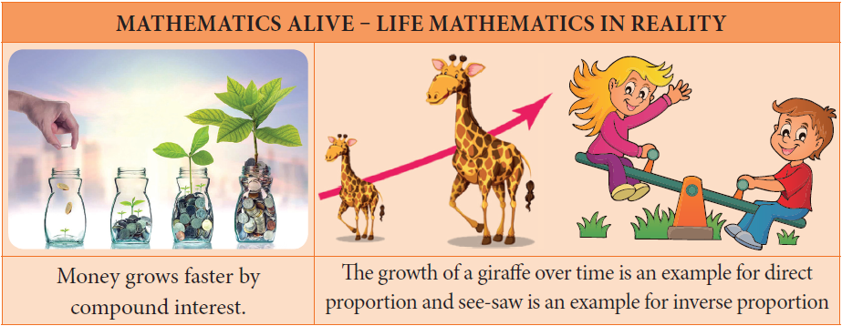
The growth of a giraffe over time is an example for direct proportion and see-saw is an example for inverse proportion.
Find the indicated percentage value of the given numbers.
Number 60
10Percentage DASH
20Percentage DASH
25Percentage DASH
Mixed fraction 33 muitiply by 1 divided by 3 Percentage DASH
Number 240
10Percentage DASH
20Percentage DASH
25Percentage DASH
Mixed fraction 33 muitiply by 1 divided by 3 Percentage DASH
Number 660
10Percentage DASH
20Percentage DASH
25Percentage DASH
Mixed fraction 33 muitiply by 1 divided by 3 Percentage DASH
Number 852
10Percentage DASH
20Percentage DASH
25Percentage DASH
Mixed fraction 33 muitiply by 1 divided by 3 Percentage DASH
Number 1200
10Percentage DASH
20Percentage DASH
25Percentage DASH
Mixed fraction 33 muitiply by 1 divided by 3 Percentage DASH
We know that Percent means per hundred or out of a hundred. It is denoted by the symbol Percentage. x Percentage. denotes the fraction x divided by100. It is very useful in comparing quantities easily. Let us see its uses in the following word problems.
Example 4.1
If x Percentage of 600 is 450, then find the value of x.
Solution:
Given, x Percentage of 600 equal to 450
X divided by 100 multiply by 600 equal to 450
X equal to 450 divided by6
X equal to 75
Page number 122
Example 4.2
When a number is decreased by 25 Percentage, it becomes 120. Find the number.
Solution:
Let the number be x.
Given, x minus 25 divided by 100 equal to 120
100 muitiply by x -25 muitiply by x whole divided by100 equal to 120
25 muitiply by x divided by100 equal to 120
Which implies x equal to 120 muitiply by 100 whole divided by75
Which implies x equal to 160
If we start with a quantity A and then decrease that quantity by x Percentage, we will get the decreased quantity as, D equal to open bracket 1 minus X divided by 100 close bracket muitiply by A
Aliter: Using the above formula,
D equal to open bracket 1 minus 25divided by 100 close bracket muitiply by A Which implies 120 equal to 75 divided by 100 muitiply by A
A equal to 120 multiply by 100 divided by 75 is equal to 160
Example 4.3
Akila scored 80 Percentage of marks in an examination. If her score was 576 marks, then find the maximum marks of the examination.
Solution:
Let the maximum marks be x.
Now, 80 Percentage of x equal to 576
80divided by 100 muitiply by x equal to 576
Which implies x equal to 576 muitiply by 100 divided by 80 equal to 720 marks
Therefore, the maximum marks of the examination equal to 720.
Example 4.4
If the price of Orid dhal after 20 Percentage increase is rupees96 per kilogram, then find the original price of Orid dhal per kilogram.
Solution:
Let the original price of Orid dhal be rupees x.
New price after 20 Percentage increase
equal to x plus 20 divided by100 muitiply by x equal to120 muitiply by x divided by100
Given that 120 muitiply by x divided by100 equal to 96
Therefore x equal to 96 muitiply by 100 divided by 120
Therefore Original price of Orid dhall per kilogram, x equal to rupees80
If we start with a quantity A and then increase that quantity by x Percentage, we will get the increased quantity as, I equal to open bracket 1 plus X divided by 100 close bracket muitiply by A
Aliter: Using the above formula,
I equal to open bracket 1 plus 20 divided by 100 close bracket muitiply by A
Which implies 96 equal to 120 divided by 100 muitiply by A
A equal to 96 muitiply by 100 divided by 120
A equal to rupees 80
Page number 123
1. What percentage of a day is 10 hours question mark
2. Divide rupees350 among P, Q and R such that P gets 50 Percentage of what Q gets and Q gets 50 Percentage of what R gets.
Think
With a lot of pride, the traffic police commissioner of a city reported that the accidents had decreased by 200 Percentage in one year. He came up with this number by stating that the increase in accidents from 200 to 600 is clearly a 200 Percentage rise and now that it had gone down from 600 last year to 200 this year should be a 200 Percentage fall. Is this decrease from 600 to 200, the same 200 Percentage as reported by him question mark Justify
Example 4.5
The income of a person is increased by 10 percentage and then decreased by 10 percentage. Find the change in his income.
Solution:
Let his initial income be rupees x.
Income after 10percentage increase is
rupees x plus open bracket 10 divided by 100 multiply by x close bracket equal to rupees 110 divided by 100 multiply by x rupees x open bracket or close bracket rupees 11 divided by 10 multiply by x
Now, income after 10 percentage decrease is
Rupees 11 multiply by x divided by 10 minus 10 divided by 100 open bracket 11 multiply by x divided by 10 close bracket
11 multiply by x divided by 10 minus 11 multiply by x divided by 100 equal to 110 multiply by x minus 11 multiply by x divided by 100 equal to Rupees 99 multiply by x divided by 100
There fore Net change in his income equal to x minus 99 multiply by x divided by 100 equal to x divided by 100
There fore, Percentage change equal to x by 100 divided by x multiply by 100 percentage equal to 1 percentage.
That is, income of the person is reduced by 1 percentage.
Aliter:
Let his income be Rupees 100
Income after 10 percentage increase is 100 plus 100 multiply by 10 divided by 100 equal to rupees 110
Now, income after 10 percentage decrease is 110 minus 110 multiply by 10 divided by 100 equal to 110 minus 11 equal to rupees 99
Therefore Net change in his income equal to 100 minus 99 equal to 1
Therefore Percentage change equal to 1 divided by 100 multiply 100 percentage is equal to 1 percentage
That is, income of the person is reduced by 1percentage.
For any given number, when it is increased first by x percentage and then decreased by y percentage, then the value of the number is increased or decreased by open bracket x plus y plus x multiply by y divided by 100 close bracket percentage. Use ‘negative’ sign for decrease and also assume ‘decrease’ if the sign is negative. Use this note to check the answer for the Example 4.5.
Page number 124
Exercise 4.1
Open bracket small roman number one close bracket if 30 percentage of x is 150, then x is dash
Open bracket ii close bracket 2 minutes is dash percentage to an hour.
Open bracket iii close bracket If x percentage of x equal to 25, then x equal to dash
Open bracket iv close bracket In a school of 1400 students, there are 420 girls. The percentage of boys in the school is dash
Open bracket v close bracket 0.5252 is dash percentage.
2 Rewrite each underlined part using percentage language.
Open bracket small roman number one close bracket under line of One half of the cake is distributed to the children.
Open bracket ii close bracket Aparna scored under line of 7.5 points out of 10 in a competition
Open bracket iii close bracket the statue was made of under line of pure silver.
Open bracket iv close bracket under line of 48 out of 50 students participated in sports.
Open bracket v close bracket Only under line of 2 persons out of 3 will be selected in the interview.
Objective Type Questions
11 Percentage of 250 litre is the same as DASH of 150 litres.
Open bracket Option A close bracket 10 percentage
Open bracket option B close bracket 15 percentage
Open bracket option C close bracket 20 percentage
Open bracket option D close bracket 30 percentage
12 If three candidates A, B and C in a school election got 153,245 and 102 votes respectively, then the percentage of votes got by the winner is DASH
Open bracket Option A close bracket 48 percentage
Open bracket option B close bracket 49 percentage
Open bracket option C close bracket 50 percentage
Open bracket option D close bracket 45 percentage
13 15 percentage of 25 percentage of 10000 is equal to DASH
Open bracket Option A close bracket 375
Open bracket option B close bracket 400
Open bracket option C close bracket 425
Open bracket option D close bracket 475
14 When 60 is subtracted from 60 percentage of a number to give 60, the number is
Open bracket Option A close bracket 60
Open bracket option B close bracket 100
Open bracket option C close bracket 150
Open bracket option D close bracket 200
15 If 48 percentage of 48 equal to 64 percentage of x, then x equal to
Open bracket Option A close bracket 64
Open bracket option B close bracket 56
Open bracket option C close bracket 42
Open bracket option D close bracket 36
PAGE NUMBER 125
1. If the selling price of an article is less than the cost price of the article, then there
is a DASH
2. An article costing Rupees 5000 is sold for Rupees 4850. Is there a profit or loss question mark What percentage is it question mark
3. If the ratio of cost price and the selling price of an article is 5 is to 7, then the profit or gain is DASH percentage.
Cost Price open bracket C.P close bracket
The amount for which an article is bought is called its Cost Price open bracket C.P close bracket
Selling Price open bracket S.P close bracket
The amount for which an article is sold is called its Selling Price open bracket S.P close bracket
Profit or Gain
When the selling Price is more than the Cost Price, then there is a profit or gain.
Therefore, profit or gain is equal to Selling Price minus Cost Price
Loss
When the selling price is less than the cost price, then there is a loss.
Therefore, Loss equal to Cost Price minus Selling Price
It is to be noted that the profit or loss is always calculated on the cost price.
Formulae:
Open bracket small roman number one close bracket Profit or Gain percentage equal to open bracket profit divided by cost price multiply by 100 close bracket percentage
Open bracket ii close bracket Loss percentage equal to open bracket loss divided by cost price multiply by 100 close bracket percentage
Open bracket iii close bracket Selling Price, S.P equal to open bracket 100 plus profit percentage close bracket divided by 100 multiply by C.P open bracket or close bracket cost price, C.P equal to 100 divided by open bracket 100 plus profit percentage close bracket multiply by S.P
Open bracket iv close bracket Selling Price, S.P equal to open bracket 100 minus loss percentage close bracket divided by 100 multiply by C.P open bracket or close bracket cost price, C.P equal to 100 divided by open bracket 100 minus loss percentage close bracket multiply by S.P
During the month of Aadi and festival seasons, shopkeepers offer a certain percentage of rebate on the marked price of the articles in order to increase the sales and also to clear the old stock. This rebate is known as discount.
Page number 126
Marked price
In big shops and departmental stores, we see that every product is tagged with a card and a price marked on it. This price marked on the card is called the marked price. Based on this marked price, the shopkeeper offers a certain percentage of discount. The price payable by the customer after deduction of discount is called the selling price. That is,
Selling Price equal to Marked Price minus Discount.
Traders, retailers and shopkeepers are involved in the buying and selling of goods. Sometimes, when articles like machinery, furniture, electronic items etc., are bought, a few expenses may happen on their repairs, transportation and labour charges etc., These expenses are included in the cost price and are called as overhead expenses.
Total Cost Price equal to Cost Price plus Overhead Expenses
Discount percentage equal to Discount divided by marked price multiply by 100 percentage
The goods and services tax open bracket G S T close bracket is the only common tax in India levied on almost all the goods and the services meant for domestic consumption. The G S T is remitted by the traders and the consumers alike and is also one of the main sources of income to both the Central and State Governments. There are 3 types of G S T namely Central G S T open bracket C G S T close bracket , State G S T open bracket S G S T close bracket and Integrated G S T open bracket I G S T close bracket . For union territories, there is U T G S T.
The G S T is shared by the Central and the State Governments equally. There are also many products like Egg, Honey, Milk, Salt etc., which are exempted from G S T. Products like Petrol, Diesel etc., do not come under G S T and they are taxed separately. The G S T council has fitted over 1300 goods and 500 services under four tax slabs namely 5percentage, 12 percentage, 18 percentage and 28 percentage.
Example 4.6
Ranjith bought a washing machine for Rupees 16150 and paid Rupees 1350 for its transportation. Then, he sold it for Rupees 19250. Find his gain or loss percentage.
Solution:
Total Cost Price of the washing machine
equal to Cost Price plus Overhead Expenses
equal to 16150 plus1350 equal to Rupees 17500
selling price equal to Rupees 19250
Here, selling price greater than Cost Price . Hence, there is a gain.
Gain percentage equal to open bracket gain divided by cost price multiply by 100 close bracket percentage equal to open bracket 19250 minus 17500 divided by 17500 multiply by 100 close bracket percentage
Equal to open bracket 1750 divided by 17500multiply by 100 close bracket percentage equal to 10 percentage
Page number 127
Example 4.7
If the selling price of an LED TV is equal to 5 divided by 4of its cost price, then find the gain or profit percentage.
Solution:
Let the cost price of the LED TV be Rupees x.
Therefore, selling price equal to 5 divided by 4 multiply by x
Profit equal to selling price minus cost price equal to 5 divided by 4 multiply by x minus x equal to x divided by 4
Profit percentage equal to open bracket profit divided by cost price multiply by 100 close bracket percentage
Therefore, profit percentage equal to open bracket x divided 4 divided by x multiply by 100 close bracket percentage equal to open bracket 1 divided by 4 multiply by 100 close bracket percentage equal to 25 percentage
Example 4.8
The cost price of 16 boxes of strawberries is equal to the selling price of 20 boxes of strawberries. Find the gain or loss percentage.
Solution:
Let the cost price of one strawberry box be rupees x.
cost price of 20 strawberry boxes equal to 20 multiply by x and
selling price of 20 strawberry boxes equal to cost price of 16 strawberry boxes equal to 16 multiply by x open bracket given close bracket
Here, selling price < cost price, hence there is a loss.
Loss equal to cost price minus selling price equal to 20 multiply by x minus 16 multiply by x equal to 4 multiply by x
Loss percentage equal to open bracket loss divided by cost price multiply by 100 close bracket percentage
equal to open bracket 4 multiply by x divided by20 multiply by x multiply by 100 close bracket percentage
therefore, Loss percentage equal to 20 percentage
If the cost price of x articles equal to selling price of y articles, then profit percentage
Equal to open bracket x minus y divided by y multiply by 100 close bracket percentage. If the answer is negative, then it is treated as loss. Check and verify this for Example 4.8.
Example 4.9
By selling a bicycle for Rupees 4275, a shopkeeper loses 5 percentage . For how much should he sell it to have a profit of 5 percentage question mark
Page number 128
Solution:
Selling price of the bicycle equal to Rupees 4275
Loss equal to 5 percentage
Therefore, cost price equal to 100 divided by open bracket 100 minus loss percentage close bracket multiply by selling price
Equal to 100 divided by 95 multiply by 4275equal to Rupees 4500
Now, Cost price equal to Rupees 4500 and the desired profit equal to 5 percentage
Therefore, Desired selling price equal to open bracket 100 plus profit percentage close bracket divided by100 multiply by cost price
Equal to 100 plus 5 divided by 100 multiply by 4500 equal to 105 multiply by 45 equal to Rupees 4725
Therefore, To have a profit of 5 percentage, he should sell the bicycle for Rupees 4725.
Example 4.10
The price of a rain coat was slashed from Rupees 1060 to Rupees 901 by a shopkeeper in the rainy season to boost the sales. Find the rate of discount given by him.
Solution:
Discount equal to Marked Price minus Selling Price
equal to 1060 minus 901
equal to Rupees 159
Therefore, discount percentage equal to open bracket 159 divided by 1060 multiply by 100 close bracket percentage
Equal to 15 percentage
A shopkeeper marks the price of a marker board 15 percentage above the cost price and then allows a discount of 15 percentage on the marked price. Does he gain or lose in the transaction question mark
Example 4.11
Find the single discount in percentage which is equivalent to two successive discounts of 25 percentage and 20 percentage given on an article.
Solution:
Let the marked price of an article be Rupees 100.
First discount of 25 percentage equal to 100 multiply by 25 divided by 100 equal to Rupees 25
Price after first discount equal to 100 minus 25 equal to Rupees 75
Second discount of 20 percentage equal to 75 multiply by 20 divided by 100 equal to Rupees 15
Page number 129
Price after second discount equal to 75 minus 15 equal to Rupees 60
Therefore, Net selling price equal to Rupees 60
Therefore, Single discount in percentage equivalent to two given successive discounts equal to open bracket 100 minus 60 close bracket percentage equal to 40 percentage .
If there are 2 successive discounts of a percentage and b percentage respectively, then
Selling Price equal to open bracket 1 minus a divided by 100 close bracket open bracket 1 minus b divided by 100 close bracket multiply by marked price.
Equal to open curly bracket 1 minus open bracket 1 minus a divided by 100 close bracket open bracket 1 minus b divided by 100 close bracket open bracket 1 minus c divided by 100 close bracket close curly bracket multiply by 100 percentage.
Open bracket Use this formula for the Example 4.11 and check the answer close bracket.
Example 4.12
A water heater is sold by a trader for Rupees 10502 including G S T at 18 percentage. Find the marked price of the water heater and G S T .
Solution:
Let the marked price be Rupees x.
Now, x plus 18 multiply by x divided by 100 equal to 10502
118 multiply by x divided by 100 equal to 10502
Therefore, Marked price, x equal to Rupees 8900
G S T at 18 Percentage equal to Rupees 10502 minus Rupees 8900 equal to Rupees 1602
Open bracket or close bracket
Equal to 8900 multiply by 18 divided by 100 equal to Rupees 1602
Example 4.13
A family went to a hotel and spent Rupees 350 for food and paid extra 5 percentage as
G S T Calculate the C G S T and S G S T.
Solution:
Cost of food equal to Rupees 350
Extra 5 percentage paid as G S T is equally shared by the Central and the State Governments at 2.5 percentage each.
Therefore, C G S T equal to S G S T equal to 350 multiply by 2.5 divided by 100 equal to Rupees 8.75
Exercise 4.2
1. Fill in the blanks:
Open bracket small roman number one close bracket Loss or gain percentage is always calculated on the DASH
Open bracket ii close bracket A mobile phone is sold for Rupees 8400 at a gain of 20 percentage. The cost price of the mobile phone is DASH
Page number 130
Open bracket iii close bracket An article is sold for Rupees 555 at a loss of mixed fraction 7 multiply 1 divided by 2 percentage . The cost price of the article is DASH
Open bracket iv close bracket A mixer grinder marked at Rupees 4500 is sold for Rupees 4140 after discount. The rate of discount is DASH
Open bracket five close bracket The total bill amount of a shirt costing Rupees 575 and a
T-shirt costing Rupees 325 with G S T of 5 percentage Is DASH
2. If selling an article for Rupees 820 causes 10 percentage loss on the selling price, then find its cost price.
3. If the profit earned on selling an article for Rupees 810 is the same as loss on selling it for Rupees 530, then find the cost price of the article.
4. If the selling price of 10 rulers is the same as the cost price of 15 rulers, then find the profit percentage.
5. Some articles are bought at 2 for Rupees 15 and sold at 3 for Rupees 25. Find the gain percentage.
6. By selling a speaker for Rupees 768, a man loses 20 percentage . In order to gain 20 percentage , how much should he sell the speaker question mark
7. Find the unknowns x, y and z.
Serial number open bracket small number one close bracket
name of the item book
marked price Rupees 225
selling price x
discount 8 percentage
Serial number open bracket ii close bracket
name of the item LED Tv
marked price y
selling price Rupees 11970
discount 5 percentage
Serial number open bracket iii close bracket
name of the item digital book
marked price Rupees 750
selling price Rupes 615
discount z
8. Find the total bill amount for the data given below:
Serial number open bracket small number one close bracket
name of the item book School bag
marked price Rupees 500
Discount 5 percentage
GST 12 percentage
Serial number open bracket ii close bracket
name of the item book Hair dryer
marked price Rupees 2000
Discount 10 percentage
GST 28 percentage
9. A branded Air-Conditioner open bracket AC close bracket has a marked price of Rupees 38000. There are 2 options given for the customer.
open bracket small roman one close bracket Selling Price is the same Rupees 38000 but with attractive gifts worth Rupees 3000
open bracket or close bracket
open bracket ii close bracket Discount of 8 percentage on the marked price but no free gifts. Which offer is better question mark
page number 131
10. If a mattress is marked for Rupees 7500 and is available at two successive discounts of 10 percentage and 20 percentage , find the amount to be paid by the customer.
Objective Type Questions
11. A fruit vendor sells fruits for Rupees 200 gaining Rupees 40. His gain percentage is
open bracket A close bracket 20 percentage
open bracket B close bracket 22 percentage
open bracket C close bracket 25 percentage
open bracket D close bracket mixed fraction 16 multiply 2 divided by three percentage
12. By selling a flower pot for Rupees 528, a woman gains 20 percentage . At what price should she sell it to gain 25 percentage question mark
open bracket A close bracket Rupees 500
open bracket B close bracket Rupees 550
open bracket C close bracket Rupees 553
open bracket D close bracket Rupees 573
13. A man buys an article for Rupees 150 and makes overhead expenses which are 12 percentage of the cost
price. At what price must he sell it to gain 5 percentage question mark
open bracket A close bracket Rupees 180
open bracket B close bracket Rupees 168
open bracket C close bracket Rupees 176.40
open bracket D close bracket Rupees 88.20
14. What is the marked price of a hat which is bought for Rupees 210 at 16 percentage discount question mark
open bracket A close bracket Rupees 243
open bracket B close bracket Rupees 176
open bracket C close bracket Rupees 230
open bracket D close bracket Rupees 250
15. The single discount in percentage which is equivalent to two successive discounts of 20 percentage and 25 percentage is
open bracket A close bracket 40 percentage
open bracket B close bracket 45 percentage
open bracket C close bracket 5 percentage
open bracket D close bracket 22.5 percentage
The most powerful force in this universe is DASH How would you complete this quote question mark The world-renowned physicist Albert Einstein completed this quote with the word Compound Interest.
When money is borrowed or deposited on simple interest open bracket I equal to b p multiply by n multiply by r divided by 100 close bracket , then the interest is calculated evenly on the principal throughout the loan or deposit period.
1. The formula to find the simple interest for a given principal is DASH
2. Find the simple interest on Rupees 900 for 73 days at 8 percentage per annum
3. In how many years will Rupees 2000 become Rupees 3600 at 10 percentage per annum simple interest question mark
In post offices, banks, insurance companies and other financial institutions, there is another type of interest calculation on offer. Here, the interest accrued during the first time period open bracket say 6 months close bracket is added to the original principal and the amount so obtained is taken as the principal for the second time period open bracket that is, the next 6 months close bracket and this keeps going on, up to the fixed time agreement between the banker and the depositor.
Page number 132
After a certain period, the difference between the amount and the money deposited is
called the compound interest which is abbreviated as C.I. Clearly, the compound interest will be more than the simple interest just because the principal keeps on changing for every time period.
We call the time period after which the interest is added to the principal, as the conversion period. For example, if the interest is compounded say quarterly, there will be four conversion periods in a year, every 3 months. In such cases, the interest rate will be one fourth of the annual rate and the number of times that interest will be compounded is four times the number of years.
In case of simple interest, the principal remains the same for the whole duration whereas in case of compound interest, the principal keeps on changing as per the conversion period. The simple interest and the compound interest remain the same for the first conversion period.
Illustration 1
To find the compound interest on Rupees 20000 for 4 years at 10 percentage per annum compounded annually
and compare it with the simple interest obtained for the same.
Calculating Compound Interest
Principal for the First year equal to Rupees 20000
Interest for the First year open bracket 20000 multiply by 10 multiply by 1 divided by 100 close bracket equal to Rupees 2000
Amount at the end of first Year open bracket P plus I close bracket equal to Rupees 22000
That is, Principal for the second year is equal to Rupees 22000
Interest for the second year open bracket 22000 multiplied by 10 multiplied by 1 the whole divided by 100 close bracket is equal to Rupees 2200
Amount at the end of second year equal to Rupees 24200
That is, Principal for the third year equal to Rupees 24200
Interest for the third year open bracket 24200 multiply by 10 multiply by 1 divided by 100 close bracket
equal to Rupees 2420
Amount at the end of third year equal to Rupees 26620
That is, Principal for the fourth year equal to Rupees 26620
Interest for the fourth year open bracket 26620 multiply by 10 multiply by 1 divided by 100 close bracket
equal to Rupees 2662
Therefore, Amount at the end of IV year equal to Rupees 29282
Therefore, Compound Interest for 4 years equal to A – minus P equal to 29282 minus 20000 equal to Rupees 9282
Calculating Simple Interest
Recall that,
Simple Interest, I equal to P multiply by N multiply by R divided by 100
Here, P equal to Rupees 20000
N equal to 4 years
R equal to 10 percentage
There fore, I equal to 20000 multiply by 4 multiply by 10 divided by 100
That is, I is equal to Rupees 8000
What we observe from the calculation of Compound interest is a repeated multiplication by the factor 1.1 as 20000 open bracket multiplied by 1.1 close bracket , 22000 open bracket multiplied by 1.1 close bracket , 24200 open bracket multiplied by 1.1 close bracket , 26620 open bracket multiplied by 1.1 close bracket for 4 years.
We also note that the compound interest open bracket Rupees 9282 close bracket grows faster and is clearly more than the simple interest open bracket Rupees 8000 close bracket obtained. When the time period is longer, the above method is time consuming. So, to save time and to find the amount and the compound interest easily we have a formula as explained in the following illustration.
Page number 133
Illustration 2
To calculate the amount and compound interest for Rupees 1000 for 3 years at 10 percentage per annum compound annually.
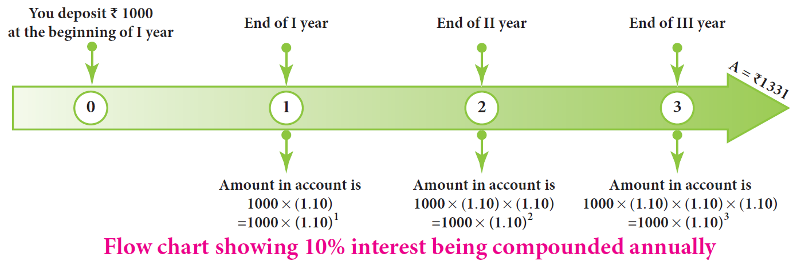
This leads to the pattern for Amount as P open bracket 1 plus r divided by 100 close bracket for the
First year,
This leads to the pattern for Amount as P open bracket 1 plus r divided by 100 close bracket open bracket 1 plus r divided by 100 close bracket
for the second year,
This leads to the pattern for Amount as P open bracket 1 plus r divided by 100 close bracket open bracket 1 plus r divided by 100 close bracket open bracket 1 plus r divided by 100 close bracket
for the third year and so on.
In general, A equal to P open bracket 1 plus r divided by 100 close bracket power n for the n th year. Here, the amount after 3 years,
A equal to 1000 open bracket 1 plus 10 divided by 100 close bracket power 3 equal to Rupees 1331 and so, Compound Interest equal to A minus P equal to Rupees 331
In 1626, Peter Minuit convinced the Wappinger Indians to sell him the Manhattan Island for 24 dollars. If the native Americans had put the 24 dollars in to a bank account at 5 percentage interest rate compounded monthly, by the year 2020 there would be well over 5.5 billion open bracket 550 crores close bracket dollars in the account! This is the might of compound interest!
The following formulae will be helpful in calculating the compound interest easily for
the following time periods.
Open bracket small roman number one close bracket When the interest is compounded annually, we have
A equal to P open bracket 1 plus r divided by 100 close bracket power n
where A is the amount, P is the principal, r is the rate of interest per annum and n is the number of years and we shall get the compound interest as Compound Interest equal to Amount minus Principal.
Open bracket ii close bracket When the interest is compounded half yearly, we have
A equal to P open bracket 1 plus r divided by 200 close bracket power 2 multiply n
Page number 134
open bracket iii close bracket When the interest is compounded quarterly, we have
A equal to P open bracket 1 plus r divided by 400 close bracket power 4 multiply by n
open bracket iv close bracket When the interest is compounded annually but rate of interest differs year by year,
we have A equal to P open bracket 1 plus a divided by 100 close bracket multiply by open bracket 1 plus b divide by 100 close bracket multiply by open bracket 1 plus c divided by 100 close bracket and so on . where a, b and c are interest rates for First, II and III years respectively.
open bracket v close bracket When interest is compounded annually but time period is in fraction say mixed fraction a multiply by b divided by c years,
we have A equal to P open bracket 1 plus r divided by 100 close bracket power a multiply by a open bracket 1 plus b by c multiply by r divided by 100 close bracket
open bracket Use of calculators are permitted for lengthy calculations and also to verify answers close bracket .
Example 4.14
Find the Compound Interest for the data given below:
open bracket small roman number one close bracket Principal equal to Rupees 4000, r equal to 5 percentage per annum., n equal to 2 years, interest compounded annually.
open bracket ii close bracket Principal equal to Rupees 5000, r equal to 4 percentage per annum., n equal to mixed fraction 1 multiply 1 divided by 2 years, interest compounded half-yearly.
open bracket iii close bracket Principal equal to Rupees 30000, r equal to 7 percentage for one year, r equal to 8 percentage for II year, compounded annually.
open bracket iv close bracket Principal equal to Rupees 10000, r equal to 8 percentage per annum., n equal to mixed fraction 2 multiply 3 divided by 4 years, interest compounded yearly.
Solution:
open bracket small roman number one close bracket Amount, A equal to P multiplied by open bracket 1 plus r divided by 100 close bracket power n
equal to 4000 multiply by open bracket one plus 5 divided by 100 close bracket power 2
equal to 4000 multiply by 21 divided by 20 multiply by 21 divided by 20
A equal to Rupees 4410
Therefore Compound Interest equal to A minus P equal to 4410 minus 4000 equal to Rupees 410
open bracket ii close bracket Amount, A equal to P open bracket 1 plus r divided By 200 close bracket power 2 multiply by n equal to 5000 open bracket 1 plus 4 divided by 200 close bracket power of 2 multiply 3 divided by 2 equal to 5000 multiply by 51 divided by 50 multiply by 51 divided by 50 multiply by 51 divided by 50
equal to51 multiply by 10.2 multiply by 10.2
equal to Rupees 5306.04
Therefore Compound interest equal to A minus P equal to 5306.04 minus 5000
equal to Rupees 306.04
open bracket iii close bracket Amount, A equal to P open bracket 1 plus a divided by 100 close bracket multiply by open bracket 1 plus b divided by 100 close bracket
equal to30000 open bracket 1 plus 7 divided by 100 multiply open bracket 1 plus 8 divided by 100 close bracket
equal to 30000 multiply by 107 divided by 100 multiply by 108 divided by 100
A equal to Rupees 34668
Therefore COMPOUND INTEREST equal to A minus P equal to 34668 minus 30000 equal to Rupees 4668
open bracket iv close bracket Amount, A equal to P open bracket 1 plus r divided by 100 close bracket power a multiply by a open bracket 1 plus b by c multiply by r divided by 100 close bracket
equal to 10000 multiply by open bracket 27 divided by 25 close bracket power 2 multiply by open bracket 53 divided by 50 close bracket
equal to 10000 multiply by 27 divided by 25 multiply by 27 divided by 25 multiply by 53 divide by 50
A equal to Rupees 12363.84
Therefore COMPOUND INTEREST equal to A minus P equal to 12363.84 minus 10000 equal to Rupees 2363.84
The compound interest formula is used in the following situations.
open bracket small roman number one close bracket To find the increase open square bracket P multiply by small bracket 1 plus r divided by 100 close bracket power n close square bracket or decrease open square bracket P multiply by small bracket 1 minus r divided by 100 close bracket power n close square bracket in population.
open bracket ii close bracket To find the growth of cells when the rate of growth is given.
open bracket iii close bracket To find the depreciation in the values of machines, vehicles, utility appliances extra.
Example 4 point one five
The value of a motor cycle 2 years ago was Rupees 70000. It depreciates at the rate of 4 percentage per annum.
Find its present value.
Solution:
Depreciated value equal to P multiply by open bracket 1 minus r divided by 100 close bracket power n
equal to 70000 multiply by open bracket 1 minus 4 divided by 100 close bracket power 2
equal to70000 multiply by 96 divided by 100 multiply by 96 divided by 100
equal to Rupees 64512
page number 136
Example 4. 16
The bacteria in a culture grows by 5 percentage in the first hour, decreases by 8 percentage in the second hour and again increases by 10 percentage in the third hour. Find the count of the bacteria at the end of 3 hours, if its initial count was 10000.
Solution:
Bacteria at the end of 3 hours
A equal to P open bracket 1 plus a divided by 100 close bracket multiply by open bracket 1 plus b divide by 100 close bracket multiply by open bracket 1 plus c divided by 100 close bracket
equal to 10000 multiply by open bracket 1 plus 5 divided by 100 close bracket multiply by open bracket 1 minus 8 divide by 100 close bracket multiply by open bracket 1 plus 10 divided by 100 close bracket open bracket minus because ‘decrease’ close bracket
equal to 10000multiply by 105 divided by 100 multiply by 92 divided by 100 multiply by 110 divided by 100
A equal to Rupees 10626
Example 4. 17
The population of a town is increasing at the rate of 6 percentage per annum. It was 238765 in the year 2018. Find the population in the year 2016 and 2020.
Solution:
Let the population in 2016 be P.
Then, A equal to P multiply by open bracket 1 plus r divided by 100 close bracket power n
Which implies 238765 equal to P multiply by open bracket 1 plus 6 divided by 100 close bracket power 2
238765 Equal to P multiply by open bracket 53 divided by 50 close bracket power 2
Which implies P equal to 238765 multiply by 50 divided by 53 multiply by 50 divided by 53
Therefore P equal to 212500
Let the population in 2020 be A
Then, A equal to P multiply by open bracket 1 plus r divided by 100 close bracket power n
There fore , a equal to 238765 multiply by open bracket 1 plus 6 divided by 100 close bracket power 2
equal to 238765 multiply by 53 divided by 50 multiply by 53 divided by 50
equal to 95.506 multiply by 53 multiply by 53
A equal to 268276
Therefore The population in the year 2016 was 212500 and that in the year 2020 will be 268276.
Page number 137
COMPOUND INTEREST minus SIMPLE INTEREST equal to P multiply by close bracket r divided by 100 close bracket power 2
COMPOUND INTEREST minus SIMPLE INTEREST equal to P multiply by open bracket r divided by 100 close bracket power 2 multiply by open bracket 3 plus r divided by 100 close bracket
Example 4. 18
Find the difference in COMPOUND INTEREST and SIMPLE INTEREST for
open bracket small roman number one close bracket P equal to Rupees 5000, r equal to 4 percentage per annum., n equal to 2 years.
open bracket ii close bracket P equal to Rupees 8000, r equal to 5 percentage per annum., n equal to 3 years.
Solution:
Open bracket small roman number one close bracket For 2 years, COMPOUND INTEREST minus SIMPLE INTEREST equal to P multiply open bracket r divided by 100 close bracket power 2 equal to 5000 multiply by 4 divided by 100 multiply by 4 divided by 100 equal to Rupees 8
open bracket ii close bracket For 3 years, COMPOUND INTEREST minus SIMPLE INTEREST equal to P multiply open bracket r divided by 100 close bracket power 2 multiply by open bracket 3 plus r divided by 100 close bracket
equal to 8000 multiply by 5 divided by 100 multiply by 5 divided by 100 multiply by open bracket 3 plus 5 divided by 100 close bracket
equal to 20 multiply by 61 divided by 20 equal to Rupees 61
Exercise 4.3
1. Fill in the blanks:
open bracket small roman number one close bracket The compound interest on Rupees 5000 at 12 percentage per annum for 2 years, compounded annually is DASH
open bracket ii close bracket The compound interest on Rupees 8000 at 10 percentage per annum for 1 year, compounded half yearly is DASH
open bracket iii close bracket The annual rate of growth in population of a town is 10 percentage. If its present population is 26620, then the population 3 years ago was DASH
open bracket iv close bracket If the compound interest is calculated quarterly, the amount is found using the formula DASH.
open bracket five close bracket The difference between the COMPOUND INTEREST and SIMPLE INTEREST for 2 years for a principal of Rupees 5000 at the rate of interest 8 percentage per annum is DASH
page number 138
2. Say True or False.
open bracket small roman number one close bracket Depreciation value is calculated by the formula
P multiply by open bracket 1 minus r divided by 100 close bracket power n.
open bracket ii close bracket If the present population of a city is P and it increases at the rate of r percentage per annum then the population n years ago would be P multiply by open bracket 1 plus r divided by 100 close bracket power n.
open bracket iii close bracket The present value of a machine is Rupees 16800. It depreciates at 25 percentage per annum Its worth after 2 years is Rupees 9450.
open bracket iv close bracket The time taken for Rupees 1000 to become Rupees 1331 at 20 percentage per annum compounded annually is 3 years.
open bracket Five close bracket The compound interest on Rupees 16000 for 9 months at 20 percentage per annum compounded quarterly is Rupees 2522.
3. Find the compound interest on Rupees 3200 at 2.5 percentage per annum for 2 years, compounded annually.
4. Find the compound interest for mixed fraction 2 multiply by 1 divided by 2 years on Rupees 4000 at 10 percentage per annum if the interest is compounded yearly.
5. A principal becomes Rupees 2028 in 2 years at 4 percentage per annum compound interest. Find the principal.
6. In how many years will Rupees 3375 become Rupees 4096 at mixed fraction 13 multiply by 1 divided by 3 percentage per annum if the interest is compounded half-yearly question mark
7. Find the COMPOUND INTEREST on Rupees 15000 for 3 years if the rates of interest are 15 percentage , 20 percentage and 25 percentage for the 1, II and III years respectively.
8. Find the difference between COMPOUND INTEREST and SIMPLE INTEREST on Rupees 5000 for 1 year at 2 percentage per annum if the interest is compounded half yearly.
9. Find the rate of interest if the difference between COMPOUND INTEREST and SIMPLE INTEREST on Rupees 8000 compounded annually for 2 years is Rupees 20.
10. Find the principal if the difference between COMPOUND INTEREST and SIMPLE INTEREST on it at 15 percentage per annum for 3 years is Rupees 1134.
Objective Type Questions
11. The number of conversion periods in a year, if the interest on a principal is compounded
every two months is DASH
open bracket A close bracket 2
open bracket B close bracket 4
open bracket C close bracket 6
open bracket D close bracket 12
12. The time taken for Rupees 4400 to become Rupees 4851 at 10 percentage , compounded half yearly is DASH
open bracket A close bracket 6 months
open bracket B close bracket 1 year
open bracket C close bracket 1 years
open bracket D close bracket 2 years
13. The cost of a machine is Rupees 18000 and it depreciates at mixed fraction 16 multiply by 2 divided by 3 percentage annually. Its value after 2 years will be DASH
open bracket A close bracket Rupees 12000
open bracket B close bracket Rupees 12500
open bracket C close bracket Rupees 15000
open bracket D close bracket Rupees 16500
page number 139
14. The sum which amounts to Rupees 2662 at 10 percentage per annum in 3 years, compounded yearly is DASH
open bracket A close bracket Rupees 2000
open bracket B close bracket Rupees 1800
open bracket C close bracket Rupees 1500
open bracket D close bracket Rupees 2500
15. The difference between compound and simple interest on a certain sum of money for
2 years at 2 percentage per annum is Rupees 1. The sum of money is DASH
open bracket A close bracket Rupees 2000
open bracket B close bracket Rupees 1500
open bracket C close bracket Rupees 3000
open bracket D close bracket Rupees 2500
Before we could learn about compound variation, let us recall the concepts on direct and inverse proportions.
If two quantities are such that an increase or decrease in one quantity makes a corresponding increase or decrease open bracket same effect close bracket in the other quantity, then they are said to be in direct proportion or said to vary directly. In other words, x and are said to vary
directly if y equal to k multiply by x always, where k is called the proportionality constant and k greater than 0 assuming
that y depends on x and so k equal to y divided by x.
For example, let us assume that one of you plan to give 2 pens to each of your friends in the birthday party. Then the number of pens to be bought will be in direct proportion with the number of friends who will attend the party. Isn’t it question mark The following table will help you understand this clearly.
Number of friends open bracket x close bracket 1
Number of pens open bracket y close bracket 2
Number of friends open bracket x close bracket 2
Number of pens open bracket y close bracket 4
Number of friends open bracket x close bracket 5
Number of pens open bracket y close bracket 10
Number of friends open bracket x close bracket 12
Number of pens open bracket y close bracket 24
Number of friends open bracket x close bracket 15
Number of pens open bracket y close bracket 30
In this case, we find that the proportionality constant, k equal to y divided by x equal to 2 divided by 1 equal to 4 divided by 2 equal to 10 divided by 5 equal to 24 divided by 12 equal to 30 divided by 15 equal to 2
Few more examples of Direct Proportion:
1.Distance hypothesis Time open bracket under constant speed close bracket : If the distance increases, then the time taken to reach that distance will also increase and vice- versa.
2.Purchase hypothesis Spending: If the purchase on utilities for a family during the festival time increases, then the spending limit also increases and vice versa.
3. Work Time Earnings: If the number of hours worked is less, then the pay earned will also be less and vice-versa.
Similarly, if two quantities are such that an increase or decrease in one quantity makes a corresponding decrease or increase open bracket opposite effect close bracket in the other quantity, then they are said to be in inverse open bracket indirect close bracket proportion or said to vary inversely. In other words, x and y are said to vary inversely, if x multiply by y equal to k always, where k is called proportionality constant and k greater than 0.
For example, let us assume that a class of 30 students in a school walks on streets in a village for health awareness campaign in an orderly manner, then we can see an inverse proportion in the number of rows and columns they walk. The following table will help you understand this clearly.
Number of students in columns open bracket x close bracket |
1 |
2 |
3 |
5 |
6 |
Number of students in rows open bracket y close bracket |
30 |
15 |
10 |
6 |
5 |
Page number 140
We can map a few of these arrangements as open bracket 5 rows Divides 6 columns close bracket and open bracket 6 rows Divides 5 columns close bracket and see the opposite variations in rows and columns.
In this case, we find that the proportionality constant, k is 30.
Few more examples of Inverse Proportion:
1 Price hypothesis Consumption: If the price of consumable products increases, then naturally its consumption will decrease and vice-versa.
Now, use the concept of direct and inverse proportions and try to answer the following questions:
1. Classify the given examples as direct or inverse proportion:
open bracket small roman number one close bracket Weight of pulses to their cost.
open bracket ii close bracket Distance travelled by bus to the price of ticket.
open bracket iii close bracket Speed of the athlete to cover a certain distance.
open bracket iv close bracket Number of workers employed to complete a construction in a specified time.
open bracket Five close bracket Area of a circle to its radius.
2. A student can type 21 pages in 15 minutes. At the same rate, how long will it take the
student to type 84 pages.
3. If 35 women can do a piece of work in 16 days, in how many days will 28 women do the
same work question mark
Box content ends
Let us now see what a Compound Variation is question mark There will be problems which may involve a chain of two or more variations in them. This is called as Compound Variation.
The different possibilities of two variations are: Direct-Direct, Direct-Inverse, Inverse-Direct, Inverse-Inverse.
There are situations where neither direct proportion nor indirect proportion can be applied. For example, if one can see a parrot at a distance through one eye, it does not mean that he can see two parrots at the same distance through both the eyes. Also, if it takes 5 minutes to fry a vadai, it does not mean that it will take 100 minutes to fry 20 vadais!
Box content ends
Let us now solve a few problems on compound variation. Here, we compare the known quantity with the unknown open bracket x close bracket . There are a few methods in practice by which problems on compound variation are solved. They are given as follows:
Page number 141
In this method, we shall compare the given data and find whether they are in direct or inverse proportion. By finding the proportion, we can use the fact that
the product of the extremes equal to the product of the means
and get the value of the unknown open bracket x close bracket .
Illustration:
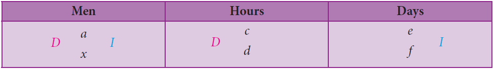
Here, the unknown open bracket x close bracket is in men and so it is compared to the known, namely hours and days. If men and hours are in direct proportion open bracket D close bracket , then take the multiplying factor as d divided by c. open bracket take the reciprocal close bracket . Also, if men and days are in inverse proportion open bracket capital I close bracket , then take the multiplying factor as e divided by f open bracket no change close bracket . Thus, we can find the unknown open bracket x close bracket in men as
x equal to a multiply by d divided by c multiply by e divided by f
Identify the data from the given statement as Persons open bracket P close bracket , Days open bracket D close bracket , Hours open bracket H close bracket and Work open bracket W close bracket and use the formula,
P1 multiply by D1 multiply by H1 divided by W1 equal to P2 multiply by D2 multiply by H2 divided by W2
where the suffix 1 contains the complete data from the first statement of the given problem and the suffix 2 contains the unknown data to be found out in the second statement of the problem. That is, this formula says, P1 men doing W1 units of work in D1 days working H1 hours per day is the same as P2 men doing W2 units of work in D2 days working H2 hours per day. Identifying the work W1 and W2 correctly is more important in these problems. This method will be easy for finding the unknown open bracket x close bracket quickly.
Example 4.19 open bracket Direct to Direct Variation close bracket
If a company pays Rupees 6 lakhs for 15 workers for 20 days, how much would it need to pay for
5 workers for 12 days question mark
Solution:
Proportion Method
Workers |
Pay open bracket work close bracket |
Days |
15 D 5 |
6 D D X |
20 D 12 |
Here, the unknown is the pay open bracket x close bracket. It is to be compared with the workers and the days.
Page number 142
Step 1:
Here, less days means less pay. So, it is in direct proportion.
Therefore The proportion is 20 is to 12 Proportion 6 is to x is statement number 1
Step 2:
Also, less workers means less pay. So, it is in direct proportion again.
Therefore, the proportion is 15: 5 proportion 6 is to x is statement number 2
Step 3:
Combining statement number 1 and statement number 2,
20 is to 12
15 is to 5 curly closed bracket of proportion 6 is to x
We know that, the product of the extremes equal to the product of the means
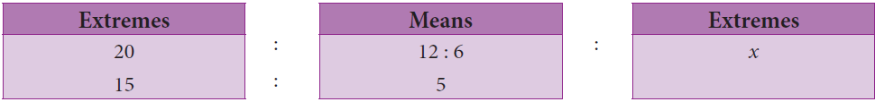
So, 20 multiply by 15 multiply by x equal to 12 multiply by 6 multiply by 5 which implies x equal to 12 multiply by 6 multiply by 5 divided by 20 multiply by 15 equal to Rupees 1.2 lakhs
Multiplicative Factor Method
Here, the unknown is the pay open bracket x close bracket . It is to be compared with the workers and the days.
Step 1:
Here, less days means less pay. So, it is in direct proportion.
Therefore The multiplying factor is 12 divided by 20 open bracket take the reciprocal close bracket .
Step 2:
Also, less workers means less pay. So, it is in direct proportion again.
Therefore The multiplying factor is 5 divided by 15 open bracket take the reciprocal close bracket .
Step 3:
Therefore, x equal to 6 multiply by 12 divided by 20 multiply by 5 divided by 15 equal to Rupees 1.2 lakhs
Formula Method
Here, P1 equal to 15, D1 equal to 20 and W1 equal to 6. Also, P2 equal to 5, D2 equal to 12 and W2 equal to x
Using the formula, P1 multiply D1 divided by W1 equal to P2 multiply D2 divided by W2
Page number 143
Which implies 15 multiply by 20 divided by 6 equal to 5 multiply by 12 divided by x
Which implies x equal to 5 multiply by 12 multiply by 6 divided by 15 multiply 20 equal to Rupees 1.2 lakhs
Example 4.20 open bracket Direct to Inverse Variation close bracket
A mat of length 180 meter is made by 15 women in 12 days. How long will it take for 32 women to make a mat of length 512 meter question mark
Solution:
Proportion Method
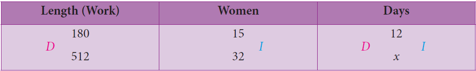
Here, the unknown is the days open bracket x close bracket . It is to be compared with the length and the women.
Step 1:
Here, more length means more days. So, it is in direct proportion.
Therefore, The proportion is 180 is to 512 proportion 12 is to x this is statement 1
Step 2:
Also, more women mean less days. So, it is in inverse proportion.
Therefore, The proportion is 32 is to 15 proportion 12 is to x this is statement 2
Step 3:
Combining statement 1 and statement 2,
180 is to 512
32 is to 15 curly closed bracket of proportion 12 is to x
We know that, the product of the extremes equal to the product of the means
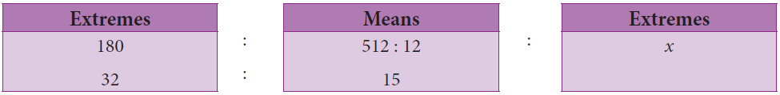
So, 180 multiply by 32 multiply by x equal to 512 multiply by 12 multiply by 15 which implies 512 multiply by 12 multiply by 15 divided by 180 multiply by 32 equal to 16 days
Multiplicative Factor Method
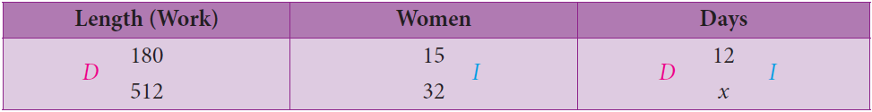
Here, the unknown is the days open bracket x close bracket . It is to be compared with the length and the women.
Page number 144
Step 1:
Here, more length means more days. So, it is in direct proportion.
Therefore The multiplying factor is 512 divided by 180 open bracket take the reciprocal close bracket .
Step 2:
Also, more women means less days. So, it is in inverse proportion.
Therefore The multiplying factor is 15 divided by 32 open bracket no change close bracket .
Step 3:
X equal to 12 multiply by 512 divided by 180 multiply by 15 divided by 32 equal to 16 days
Formula Method
Here, P1 equal to 15, D1equal to 12 and W1 equal to 180 and P2 equal to32, D2 equal to x and W2 equal to 512
Using the formula,
P1 multiply D1 divided by W1 equal to P2 multiply D2 divided by W2
Which implies 15 multiply by 12 divided by 180 equal to 32 multiply by x divided by 512
Which implies 1 equal to 32 multiply by x divided by 512 which implies 512 divided by 32 equal to 16 days
Remark: Students may answer in any of the three given methods dealt here.
1. If and y vary directly, find k when x equal to y equal to 5.
2. If x and y vary inversely, find the constant of proportionality when x equal to 64 and y equal to 0.75
Draw a circle of a given radius. Then, draw its radii in such a way that the angles between any two-consecutive pair of radii are equal. Start drawing 3 radii and end with drawing 12 radii in the circle. List and prepare a table for the number of radii to the angle between a pair of consecutive radii and check whether they are in inverse proportion. What is the proportionality constant question mark
Example 4.21 open bracket Inverse minus Direct Variation close bracket
If 81 students can do a painting on a wall of length 448 meter in 56 days, then how many students can do the painting on a similar type of wall of length 160 m in 27 days question mark
Solution:
Multiplicative Factor Method
Students |
Days |
Length of the wall open bracket work close bracket |
81 I D X |
56 I 27 |
448 D 160 |
Page number 145
Here, the unknown is the students open bracket x close bracket . It is to be compared with the days and the length of
the wall.
Step 1:
Here, less days means more students. So, it is in inverse proportion.
Therefore The multiplying factor is 56 divided by 27 .
Step 2:
Also, less length means less students. So, it is in direct proportion.
Therefore The multiplying factor is 160 divided by 448.
Step 3:
Therefore x equal to 81 multiply by 56 divided by 27 multiply by 160 divided by 448.
X equal to 60 students.
Formula Method
Here, P1 equal to 81, D1 equal to 56 and W1 equal to 448 and P2 equal to x, D2 equal to27 and W2 equal to160
Using the formula, P1 multiply D1 divided by W1 equal to P2 multiply D2 divided by W2
Which implies 81 multiply by 56 divided by 448 equal to x multiply by 27 divided by 160
Which implied x is equal to 81 multiplied by 56 multiplied by 160 the whole divided by 448 multiplied by 27
Which implies x equal to 60 students.
Example 4.22 open bracket Inverse hyphen Inverse Variation close bracket
If 48 men working 7 hours a day can do a work in 24 days, then in how many days will 28 men working 8 hours a day can complete the same work question mark
Solution:
Multiplicative Factor Method
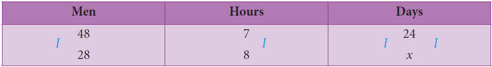
Here, the unknown is the days open bracket x close bracket . It is to be compared with the men and the hours.
Step 1:
Here, less men means more days. So, it is in inverse proportion.
Therefore The multiplying factor is 48 divided by 28.
Page number 146
Step 2:
Also, more hours means less days. So, it is in inverse proportion again.
Therefore The multiplying factor is.
Step 3:
There fore , x equal to 24 multiply by 48 divided by 28 multiply by 7 divided by 8 equal to 36 days.
Formula Method
Here, P1 equal to 48, D1 equal to 24, H1 equal to7 and W1 equal to 1 open bracket why question mark close bracket
P2 equal to 28, D2equal to x, H2 equal to 8 and W2 equal to 1 open bracket why question mark close bracket
using the formula, P1 multiply by D1 multiply by H1 divided by W1 equal to P2 multiply by D2 multiply by H2 divided by W2
which implies 48 multiply by 24 multiply by 7 divided by 1 equal to 28 multiply by x multiply by 8 divided by 1
which implies x equal to 48 multiply by 24 muliptly by 7 divided by 28 multiply by 8 equal to 36 days
Identify the different variations present in the following questions:
1. 24 men can make 48 articles in 12 days. Then, 6 men can make DASH articles in 6 days.
2. 15 workers can lay a road of length 4 kilo meter in 4 hours. Then, DASH workers can lay a road
of length 8 kilo meter in 8 hours.
3. 25 women working 12 hours a day can complete a work in 36 days. Then, 20 women must
Work DASH hours a day to complete the same work in 30 days.
4. In a camp there are 420 kilo gram of rice sufficient for 98 persons for 45 days. The number of days that 60 kilo gram of rice will last for 42 persons is DASH.
How would you find the answer for the following question question mark
If Kani can finish a given work in 2 hours and Viji in 3 hours, then in what time can they finish it working together question mark The answer for this question will be known here in this section.
Work to be done is usually considered as one unit. Work can be in any form like building a wall, making a road, filling or emptying a tank or even eating a certain amount of food.
Time is measured in hours, days extra … Certain assumptions are made that the work so done
is uniform and each person shares the same work time in case of group work in completing
the work.
Page number 147
Unitary Method
If two person’s X and Y can complete some work individually in a and b days, then their one day’s work will be 1 divided by a and 1 divided by b respectively.
Working together, their one day’s work equal to 1 divided by a plus 1 divided by b equal to a plus b divided by a multiply by b and so,
X and Y together can complete the work in a multiply by b divided by a plus b days.
Example 4.23
A and B together can do a piece of work in 16 days and A alone can do it in 48 days. How
long will B take to complete the work question mark
Solution:
open bracket A plus B close bracket ’s 1 day’s work equal to 1 divided by 16
A ’s 1 day’s work equal to 1 divided by 48
B ’s 1 day’s work equal to 1 divided by 16 minus 1 divided by 48
equal to 3 minus 1 divided by 48 equal to 2 divided by 48 equal to 1 divided by 24
Therefore B alone can complete the work in 24 days.
The time taken to complete a work or task depends on various factors such as number of persons, their capacity to do the work, the amount of work and the time spent per day for the completion of work.
Example 4.24
P and Q can do a piece of work in 20 days and 30 days respectively. They started the work together and Q left after some days of work and P finished the remaining work in 5 days. After how many days from the start did Q leave question mark
Solution:
P’s 1 day’s work equal to 1 divided by 20 and Q’s 1 day’s work equal to 1 divided by 30
P’s work for 5 days equal to 1 divided by 20 multiply by 5 equal to 5 divided by 20 equal to 1 divided by 4
Therefore, the remaining work equal to 1 minus 1 divided by 4 equal to 3 divided by 4 open bracket as the total work is always 1 close bracket . This remaining
work was done by both P and Q.
Work done by P and Q in a day equal to 1 divided by 20 plus 1 divided by 30 equal to 5 divided by 60 equal to 1 divided by 12
Therefore, the number of days they worked together 3 by 4 divided by 1 by 12 equal to 3 divided by 4 multiply by 12 divided by 1 equal to 9 days.
So, Q left after 9 days from the day the work started.
Example 4.25
A works 3 times as fast as B and is able to complete a work in 24 days less than the days taken by B. Find the time in which they can complete the work together.
Page number 148
Solution:
If B does the work in 3 days, then A will do it in 1 day. That is, the difference is 2 days.
Here, given that the difference between A and B in completing the work is 24 days. Therefore,
A will take 24 divided by 2 equal to 12 days and B will take 3 multiply by 12 equal to 36 days to complete the work separately.
Hence, the time taken by A and B together to complete the work equal to a multiply by b divided by a plus b days.
Equal to 12 multiply by 36 divided by 12 plus 36 equal to 12 multiply by 36 divided by 48 equal to 9 days.
If A is a divided by b times as good a worker as B, then A will only b divided by a of the time taken by B to complete the work. Try to solve the above Example 4.25 using this.
When a group of people do some work together, based on their individual work they get a share of money themselves. In general, money earned is shared by people, who worked together, in the ratio of the total work done by each of them.
Example 4.26
X, Y and Z can do a piece of job in 4, 6 and 10 days respectively. If X,Y and Z work together to complete, then find their separate shares if they will be paid Rupees 31000 for completing the job.
Solution:
Since they all work together for the same number of days, open bracket 60 divided by 31 close bracket the ratio in which they share the money is equal to the ratio of their work done per day.
That is, it is equal to 1 divided by 4 is to 1 divided by 6 is to 1 divided by 10 equal to 15 divided by 60 is to 10 divided by 60 is to 6 divided by 60 equal to 15 is to 10 is to 6
Here, the total parts equal to 15 plus 10 plus 6 equal to 31
Hence, A’s share equal to 15 divided by 31 multiply by 31000 equal to Rupees 15000, B’s share equal to 10 divided by 31 multiply by 31000equal to Rupees 10000 and
C’s share is Rupees 31000 minus open bracket Rupees 15000 plus 10000 close bracket equal to Rupees 6000.
Page number 149
Box content ends
Exercise 4.4
1. Fill in the blanks:
Open bracket small roman number one close bracket A can finish a job in 3 days whereas B finishes it in 6 days. The time taken to complete the job working together is DASH days.
Open bracket ii close bracket If 5 persons can do 5 jobs in 5 days, then 50 persons can do 50 jobs in DASH days.
Open bracket iii close bracket A can do a work in 24 days. If A and B together can finish the work in 6 days, then B alone can finish the work in DASH days.
Open bracket iv close bracket A alone can do a piece of work in 35 days. If B is 40 percentage more efficient than A, then B will finish the work in DASH days.
Open bracket 5 close bracket A alone can do a work in 10 days and B alone in 15 days. They undertook the work for Rupees 200000. The amount that A will get is DASH.
Page number 150
remaining work in 24 days. Find the time taken to complete 80 percentage of the work, if they work together.
Exercise 4.5
Miscellaneous Practice Problems
1 A fruit vendor bought some mangoes of which 10 percentage were rotten. He sold mixed fraction 33 multiply by 1 divided by 3 percentage of the rest. Find the total number of mangoes bought by him initially, if he still has 240 mangoes with him.
2 A student gets 31 percentage marks in an examination but fails by 12 marks. If the pass percentage is 35 percentage, find the maximum marks of the examination.
3 Sultana bought the following things from a general store. Calculate the total bill amount paid by her.
open bracket small roman number one close bracket
Medicines costing Rupees 800 with G S T at 5 percentage
open bracket ii close bracket Cosmetics costing Rupees 650 with G S T at 12 percentage
open bracket iii close bracket Cereals costing Rupees 900 with G S T at 0 percentage
open bracket iv close bracket Sunglass costing Rupees 1750 with G S T at18 percentage
open bracket 5 close bracket Air Conditioner costing Rupees 28500 with G S T at 28 percentage
4 P’s income is 25 percentage more than that of Q. By what percentage is Q’s income less than P’s question mark
5 Vaidegi sold two sarees for Rupees 2200 each. On one she gains 10 percentage and on the other she loses 12 percentage . Find her total gain or loss percentage in the sale of the sarees.
6 If 32 men working 12 hours a day can do a work in 15 days, then how many men working 10 hours a day can do double that work in 24 days question mark
Page number 151
Challenging Problems
Summary
open bracket small roman number one close bracket Profit or Gain percentage equal to open bracket profit divided by cost price multiply by 100 close bracket percentage
open bracket ii close bracket Loss percentage equal to open bracket loss divided by cost price multiply by 100 close bracket percentage
open bracket iii close bracket Selling Price,
S.P equal to open bracket 100 plus profit percentage close bracket divided by 100 multiply by cost price open bracket or close bracket cost price, C.P equal to 100 divided by open bracket 100 plus profit percentage close bracket multiply by selling price
open bracket iv close bracket Selling Price, S.P equal to open bracket 100 minus loss percentage close bracket divided by 100 multiply by cost price open bracket or close bracket cost price, C.P equal to 100 divided by open bracket 100 minus loss percentage close bracket multiply by selling price
page number 152
When the interest is compounded annually, A equal to P multiply by open bracket 1 plus r divided by 100 close bracket power n
When the interest is compounded half yearly , A equal to P multiply by open bracket 1 plus r divided by 200 close bracket power 2n
When the interest is compounded quarterly, A equal to P multiply by open bracket 1 plus r divided by 400 close bracket power 4n
When the interest is compounded annually but rate of interest differs year by year,
A equal to P multiply by open bracket 1 plus a divided by 100 close bracket multiply by open bracket 1 plus b divided by 100 close bracket multiply by open bracket 1 plus c divided by 100 close bracket and so on. where a, b and c are interest rates for 1, II and III years respectively.
By using this formula, P1 multiply by D1 multiply by H1 divided by W1 equal to P2 multiply by D2 multiply by H2 divided by W2 we can find the unknown open bracket x close bracket .
one day’s work will be 1 divided by a and 1 divided by b respectively and X and Y together can complete the work in a multiply by b divided by a plus b days.
Page number 153
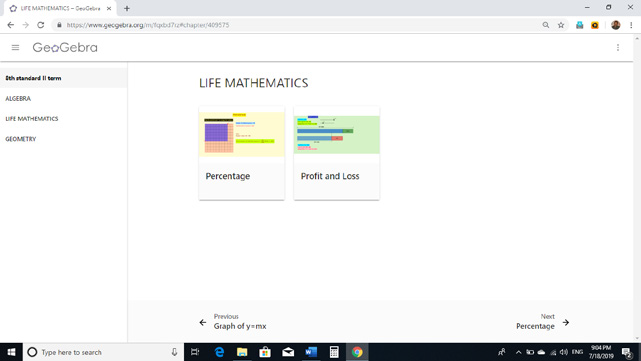
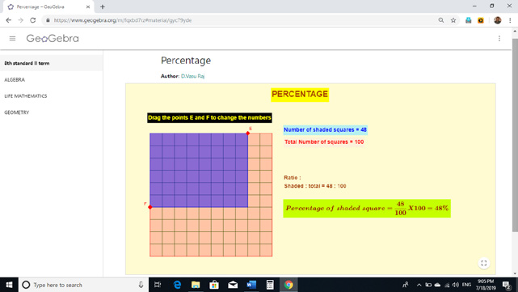
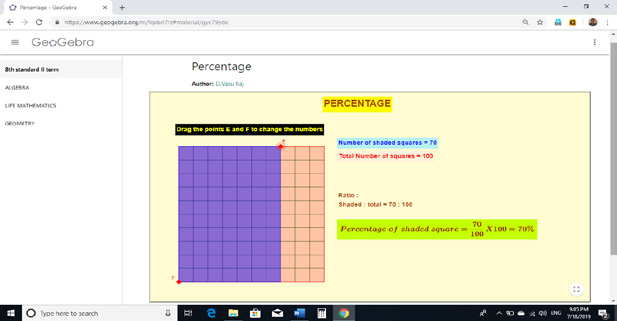
Go through the remaining worksheets given for this chapter
Browse in the link
Life Mathematics:
https://www.geogebra.org/m/fqxbd7rz#chapter/409575 or Scan the QR Code.
*Pictures are indicatives only.
*If browser requires, allow Flash Player or Java Script to load the page.
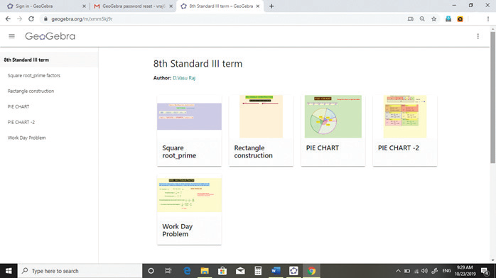
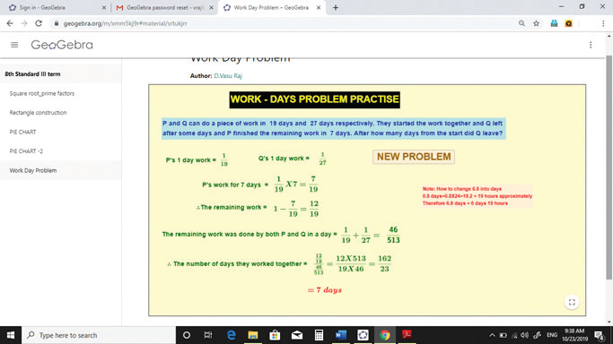
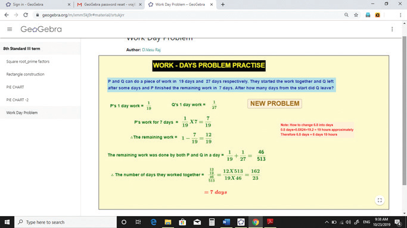
Browse in the link
Life Mathematics:
https://www.geogebra.org/m/xmm5kj9r or Scan the QR Code.
Page number 154
Learning Objectives
Geometry, as we all know studies shapes by looking at the properties and relations of points, circles, triangles of two dimensions and solids. In the earlier classes, we have seen a few properties of triangles. In this class, we are going to recall them and also learn the congruence and the similarity properties in triangles. Also, we shall learn about the Pythagorean theorem and the concurrency of medians, altitudes, angle bisectors and perpendicular bisectors in a triangle. Also, we will also see how to construct quadrilaterals of various types.
MATHEMATICS ALIVE minus GEOMETRY IN REAL LIFE
Box item
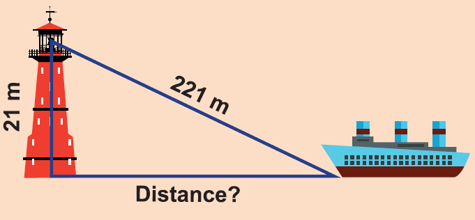
The Pythagoras theorem is useful in finding the distance and the heights of objects.
For better strength and stability, congruent triangles in the construction of buildings.
Page number 155
Answer the following questions by recalling the properties of triangles:
1 The sum of the three angles of a triangle is DASH
2 The exterior angle of a triangle is equal to the sum of the DASH angles to it.
3 In a triangle, the sum of any two sides is DASH than the third side.
4 Angles opposite to equal sides are DASH and vice minus versa.
5 What is angle A in the triangle ABC question mark
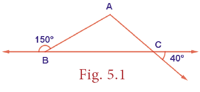
Congruent figures are exactly the same in shape and size. In other words, shapes are congruent if one fits exactly over the other.
Examples
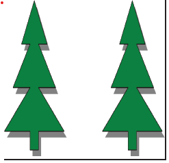
Similar figures mathematically have the same shape but different sizes. Two geometrical figures are said to be similar open bracket close bracket if the measures of one to the corresponding measures of the other are in a constant ratio. In other words, every part of a photographic enlargement is similar to the corresponding part of the original.
Examples
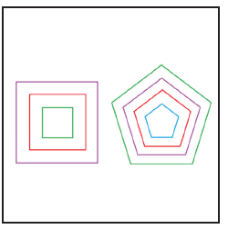
Page number 156
Try theseIdentify the pairs of figures which are similar and congruent and write the letter pairs. 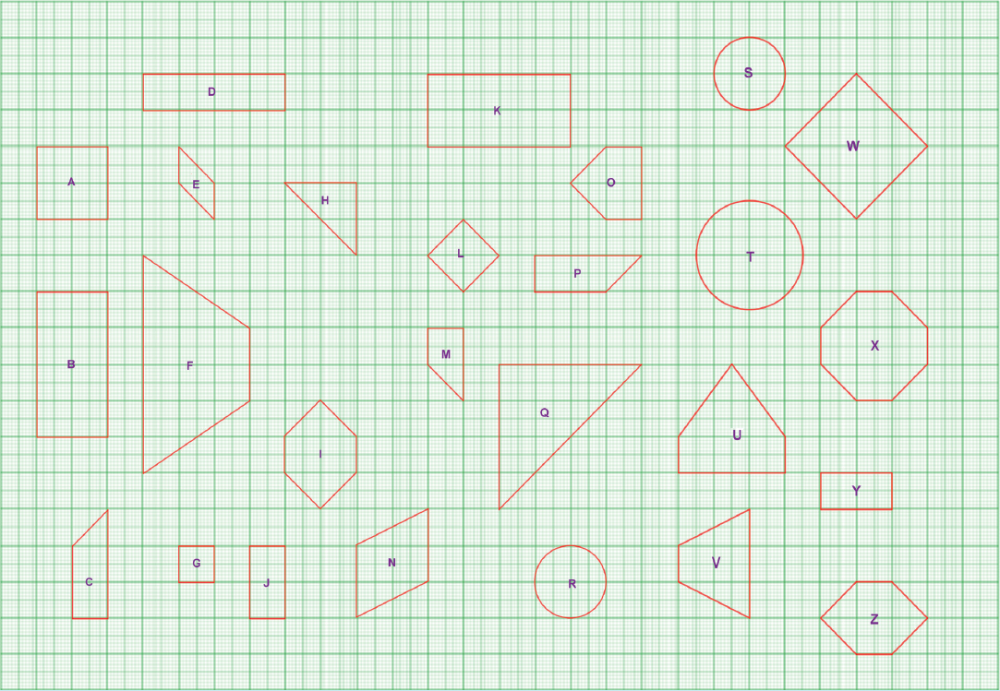 |
Consider two given triangles PQR and ABC. They are said to be congruent open bracket congruent close bracket if their corresponding parts are congruent. That is PQ is equal to A B , Q R is equal to BC and PR is equal to AC and also angle P is equal to angle A angle Q is equal to angle B and angle R is equal to angle c This is denoted as PQR congruent to triangle ABC
There are 4 ways by which one can prove that two triangles are congruent.
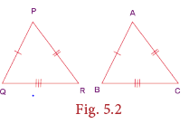
open bracket small roman 1 close bracket SSS open bracket Side Side Side close bracket Congruence
If the three sides of a triangle are congruent to the three sides of another triangle, then the triangles are congruent. That is AB is equal to PQ, BC is equal to QR, and AC is eqal to PR implies triangle ABC is congruent to PQR
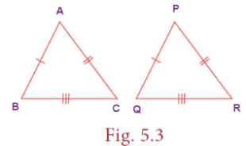
open bracket small roman 2 close bracket SAS open bracket Side Angle Side close bracket Congruence
If two sides and the included angle open bracket the angle between them close bracket of a triangle are congruent to two sides and the included angle of another triangle, then the triangles are congruent. Here, AC is equal to PQ, angle A equal to angle P and AB equal to PR and hence triangle ACB congruent to triangle PQR
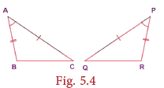
Page number 157
open bracket small roman 3 close bracket A S A open bracket Angle Side Angle close bracket Congruence
If two angles and the included side of a triangle are congruent to two angles and the included side of another triangle, then the triangles are congruent. Here,
Angle A is equal to angle R
CA is equal to PR and angle C is equal to angle P and hence triangle ABC is congruent to triangle RQP
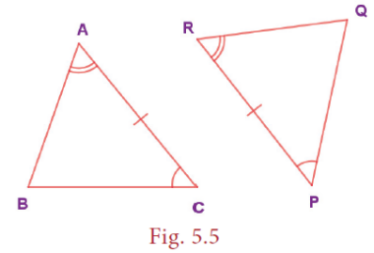
open bracket small roman 4 close bracket RHS open bracket Right Angle Hypotenuse
Side close bracket Congruence
If the hypotenuse and a leg of one right triangle are congruent to the hypotenuse and a leg of another right triangle, then the triangles are congruent. Here,
Angle B is equal to angle Q is equal to 90 degree open bracket right angle close bracket
BC is equal to QR open bracket leg close bracket and AC is equal to PR open bracket hypotenuse close bracket
and hence triangle ABC is congruent to triangle PQR.
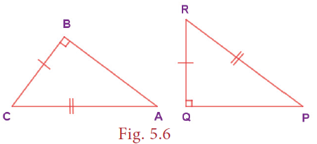
Box items
Note
Box item
Try these
Match the following by their congruence property
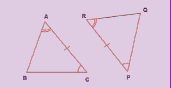
R H S
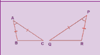
S S S
Box item
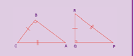
S A S
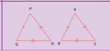
A S A
Page number 158
Example 5.1
Find the unknowns in the following figures
open bracket small roman 1 close bracket
Box item
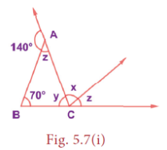
open bracket small roman 2 close bracket
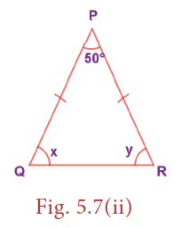
open bracket small roman 3 close bracket
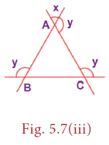
Solution:
open bracket small roman 1 close bracket Now, from Figure. 5.7 open bracket small roman 1 close bracket,
140 degree plus z is equal to 180 degree open bracket linear pair close bracket
Which implies that z is equal to 180 degree minus 140 degree is equal to 40 degree
Also x plus z is equal to 70 degree plus z open bracket exterior angle property close bracket
Which implies that x is equal to 70 degree
Also z plus y plus 70 degree is equal to 180 degree open bracket angle sum property in triangle ABC close bracket
Which implies that 40 degree plus y plus 70 degree is equal to 180 degree
Which implies that y is equal to 180 degree minus 110 degree is equal to 70 degree
open bracket small roman 2 close bracket Now, from Figure. 5.7 open bracket small roman 2 close bracket,
PQ is equal to PR
Which implies that angle Q is equal to angle R open bracket Angles opposite to equal sides are equal close bracket
Which implies that x is equal to y
Which implies that x plus y plus 50 degree is equal to 180 degree open bracket Angle sum property in triangle PQR close bracket
Which implies that 2 x is equal to 130 degree
Which implies that x is equal to 65 degree
Which implies that y is equal to 65 degree
Open bracket small roman 3 close bracket Now, from Figure 5.7 open bracket small roman 3 close bracket, in triangle ABC angle A is equal to x open bracket vertically opposite angles close bracket
Similarly, angle B is equal to angle C is equal to x open bracket why question mark close bracket
Which implies that angle A plus angle B plus angle C is equal to 180 degree open bracket angle sum property in triangle in ABC close bracket
Which implies that 3 x is equal to 180 degree
Which implies that x is equal to 60 degree
Which implies that y is equal to 180 degree minus 60 degree is equal to 120 degree.
Page number 159
Example 5.2 open bracket Illustrating S S S and S A S Congruence close bracket
If angle E is equal to angle S and G is the midpoint of E S,
Prove that triangle G E T congruence to triangle G S T.
Box item
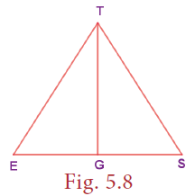
Proof:
Serial Number 1 statement angle E is congruent to angle S Reasons given
Serial number 2 statement ET congruent to ST Reasons if angles, then sides
Serial number 3 statement G is the midpoint of ES reason given
Serial number 4 statement EG is congruent to SG reason follows from 3
Serial number 5 statement TG is congruent to TG reason common open bracket reflexive property close bracket
Serial number 6 statement triangle GET is congruent to triangle GST reason by SSS open bracket 2,4,5 close bracket and also by SAS open bracket 2,1,4 close bracket
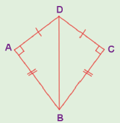
In the figure, DA is equal to DC and BA is equal to BC. Are the triangles DBA and DBC congruent question mark Why question mark
Example 5.3 open bracket Illustrating A S A Congruence close bracket
If angle Y T B is congruent to angle YBT and angle B O Y is congruent to angle T R Y
Prove that triangle BOY congruent to triangle TRY
Box item
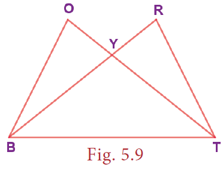
Proof:
Serial number |
Statements |
Reasons |
1 |
Angle B, O , Y is congruent to angle TYR |
vertical angles are congruent |
2 |
Angle Y, T, B is congruent to angle YBT |
given |
3 |
BY is congruent to T ,Y |
If angles, then sides |
4 |
Angle BOY is congruent to angle T, R, Y |
given |
5 |
Angle O, B, Y is congruent to angle R, T, Y |
follows from 1 and 4 |
6 |
Triangle B, O, Y is congruent to triangle T, R. Y |
by A, S, A open bracket 1,3,5 close bracket |
Example 5.4 open bracket Illustrating RHS Congruence close bracket
If TAP is an isosceles triangle with TA is equal to TP and angle TSA is equal to 90 degree.
Open bracket small roman 1 close bracket is triangle TAS is congruent to triangle TPS why question mark
Open bracket small roman 2 close bracket Is angle P is equal to angle A question mark why question mark
Open bracket small roman 3 close bracket Is AS is equal to PS question mark why question mark
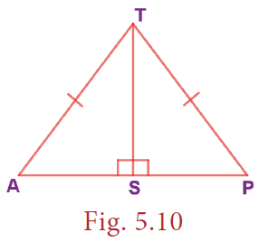
Page number 160
Proof:
open bracket small roman 1 close bracket TA is equal to TP open bracket hypotenuse close bracket and angle TSA is equal to 90 degree
TS is common open bracket leg close bracket
Hence, by RHS congruence, triangle TAS is congruent to triangle TPS
open bracket small roman 2 close bracket Given T A is equal to T P
therefore. Angle P is equal to angle A open bracket if angles then sides close bracket
open bracket small roman 3 close bracket From open bracket small roman 1 close bracket triangle T A S is congruent to triangle T P S ,
By CPCTC
A S is equal to P S
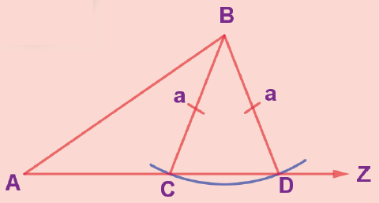
S S A and A S S properties are not sufficient to prove that two triangles are congruent. This is explained in the given figure. By construction, in triangles ABD and ABC, BC is equal to BD is equal to a. Also, AB and angle B A Z are common. But A C is not equal to A D. So, triangle ABD is not congruent to triangle ABC
and so S S A fails.
Consider two given triangles PQR and ABC. They are said to be similar open bracket similar close bracket if their corresponding angles are equal and corresponding sides are proportional. That is angle P is equal to angle A, angle Q is equal to angle B and angle R is equal to angle C and also PQ divided by AB is equal to PR divided by AC is equal to QR divided by BC. This is denoted as tringle PQR similar to triangle ABC.
There are 4 ways by which one can prove that two triangles are similar.
Box item
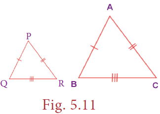
open bracket small roman 1 close bracket A A A open bracket Angle Angle Angle close bracket or A A open bracket Angle Angle close bracket Similarity
Two triangles are similar if two angles of one triangle are equal respectively to two angles
of the other triangle. In the given figure, angle A is equal to angle P, angle B is equal to angle Q. therefore, triangle ABC similar to triangle PQR.
Box item
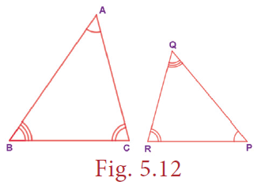
open bracket small roman 2 close bracket S A S open bracket Side Angle Side close bracket Similarity
Two triangles are similar if two sides of one triangle are proportional to two sides of the other triangle and the included angles are equal. In the given figure, AC divided by PQ is equal to AB divided by PR and angle A is equal to angle B and hence triangle ABC similar to triangle PQR.
Box item
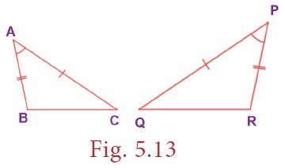
Page number 161
open bracket small roman 3 close bracket SSS open bracket Side Side Side close bracket Similarity
Two triangles are similar if their corresponding sides are in the same ratio. That is, if
AB divided by PQ is equal to AC divided by PR is equal to BC divided by QR. Then triangle ABC similar to triangle PQR.
Box item
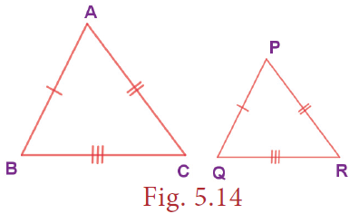
open bracket small roman iv close bracket RHS open bracket Right Angle Hypotenuse Side close bracket Similarity
Two right triangles are similar if the hypotenuse and a leg of one triangle are respectively proportional to the hypotenuse and a leg of the other triangle. That is, if angle is equal to angle Q is equal to 90 degree and AC divided by PR is equal to BC divided by QR then, triangle ABC similar triangle PQR.
Box item
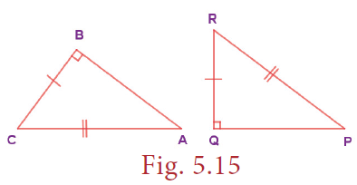
If triangle ABC is similar to triangle PQR, then the corresponding sides to AB, BC and AC of triangle ABC are PQ, QR and PR respectively and the corresponding angles to A, B and C are P, Q and R respectively. Naming a triangle has a significance. For example, if triangle ABC is similar to triangle PQR then, triangle BAC is not similar to triangle PQR.
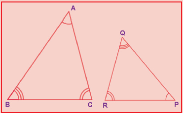
Example 5.5
In the Figure. 5.16, if triangle PQR is similar to triangle XYZ, find a and b.
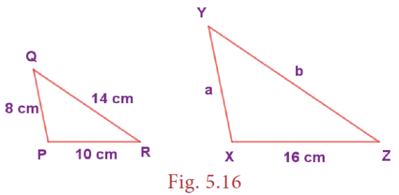
Solution:
Given that triangle PQR is similar to triangle XYZ.
Therefore, Their corresponding sides are proportional.
Which implies that PQ divided by XY is equal to QR divided YZ is equal to PR divided by XZ
Which implies that 8 divided by a is equal to 14 divided b is equal to 10 divided by 16.
Which implies that 8 divided by a is equal to 10 divided by 16
Which implies that a is equal to 8 multiplied by 16 divided by 10 is equal to 128 divided by 10.
a is equal to 12.8 centimeter.
Also, 14 divided by b is equal to 10 divided by 16.
Which implies that b is equal to 14 multiplied by 16 is divided by 10 is equal to 224 divided by 10.
b is equal to 22.4 centimeter.
Page number 162
Example 5.6 open bracket Illustrating AA Similarity close bracket
In the Figure. 5.17, angle ABC is congruent to angle EDC and the perimeter of triangle CDE is 24 units, and the perimeter is 27 units, prove that AB is congruent to EC.
Box item
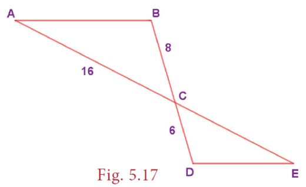
Serial number 1 statement angle ABC is congruent to angle EDC reason given
Serial number 2 statement angle BCA is congruent to angle DCE reason vertically opposite angle are equal.
Serial number 3 statement triangle ABC is similar to triangle EDC reason by AA property open bracket 1,2 close bracket.
Serial number 4 statement AB divided by ED is equal to BC divided by DC is equal to AC divided by EC reason corresponding sides are proportional by 3.
Which implies that 8 divided by 6 is equal to 16 divided by EC which implies that EC is equal to 12 units.
Given, the perimeter of triangle CDE equal to 27 units,
Therefore, ED plus DC plus EC is equal to 27 which implies that ED plus 6 plus 12 is equal to 27 which implies that ED is equal to 27 minus 18 is equal to 9 units.
Therefore , AB divided by 9 is equal to 8 divided by 6 which implies that AB is equal to 12 units and hence AB is equal to EC.
Example 5.7 open bracket Illustrating AA Similarity close bracket
In the given Figure. 5.18,
If angle 1 is congruent to angle 3 and angle 2 is congruent to angle 4 then,
Prove that triangle BIG similar to triangle FAT. Also find FA.
Box item.
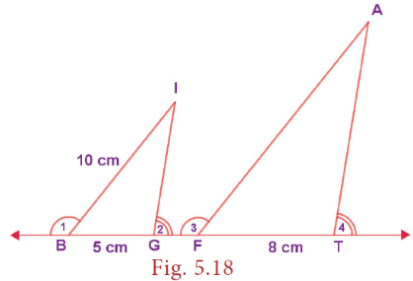
Serial number 1 statement angle 1 is congruent to angle 3 reason given
Serial number 2 statement angle IBG is congruent to angle AFT reason supplement of congruent angles are congruent
Serial number 3 statement angle 2 is congruent to 4 reasons given
Serial number 4 statement angle IGB is congruent to angle ATF reason supplement of congruent angles are congruent
Serial number 5 statement triangle BIG similar to triangle FAT reason by AA property open bracket 2,4 close bracket.
Also, their corresponding sides are proportional
Which implies that B I divided by F A is equal to BG divided by FT which implies that 10 divided by F A is equal to 5 divided by 8
Which implies that F A is equal to 10 multiplied by 8 divided by 5 is equal to 80 divided by 5 is equal to 16 centimeter.
Page number 163
Example 5.8 open bracket Illustrating S A S Similarity close bracket
If A is the midpoint of RU and T is the midpoint of RN, prove that triangle R A T similar to triangle R U N.
Box item
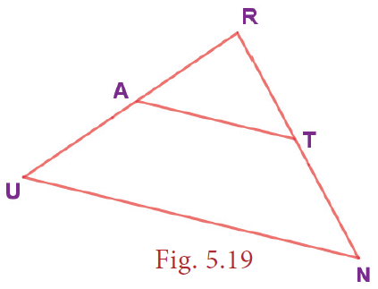
Proof:
Serial number 1 statement triangle A R T congruent to triangle U R N.
Reasons angle R is common in triangle R A T and triangle R U N.
Serial number 2 statement R A is equal to A U is equal to 1 divided by 2 multiplied by R U reasons A is the midpoint of RU.
Serial number 3 statement R T is equal to TN is equal to 1 divided by 2 multiplied by R N reasons T is the midpoint of R N.
Serial number 4 statement R A divided by R U is equal to RT divided by RN is equal to 1 divided by 2 multiplied by RN reasons the sides are proportional from 2 and 3
Serial number 5 statement triangle R A T similar to triangle R U N reasons by S A S open bracket 1 and 4 close bracket
Example 5.9 open bracket Illustrating SSS similarity close bracket
Prove that triangle PQR is similar to triangle PRS in the given Figure. 5.20.
Solution:
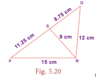
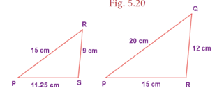
Now, PQ divided by PR is equal to 20 divided by 15 is equal to 4 divided by 3.
PR divided by PS is equal to 15 divided by 11.25 is equal to 4 divided by 3.
Also QR divided RS is equal to 12 divided by 9 is equal to 4 divided by 3.
We find PQ divided by PR is equal to P R divided by PS is equal to QR divided by R S.
That is, their corresponding sides are proportional.
∴ By SSS Similarity, triangle PQR is similar to triangle P R S.
Example 5.10 open bracket Illustrating RHS similarity close bracket
The height of a man and his shadow form a triangle similar to that formed by a nearby tree and its shadow. What is the height of the tree question mark
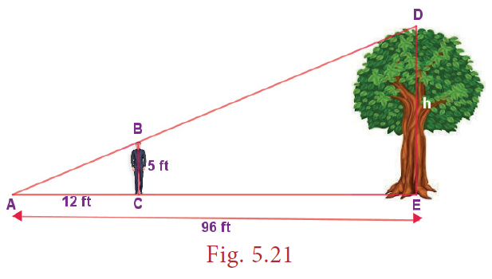
Page number 164
Solution:
Here, triangle ABC is similar to triangle ADE open bracket given close bracket therefore Their corresponding sides are proportional open bracket by RHS similarity close bracket .
Therefore, AC divided by AE is equal to BC divided by DE
Which implies that 12 divided by 96 is equal to 5 divided by h.
Which implies that h is equal to 5 multiplied by 96 is divided by 12 is equal to 40 feet.
Therefore the height of the tree is 40 feet.
The teacher cuts many triangles that are similar or congruent from a card board open bracket or close bracket chart sheet. The students are asked to find which pair of triangles are similar or congruent based on the measures indicated in the triangles.
Exercise 5.1
1. Fill in the blanks with the correct term from the given list.
open bracket in proportion, similar, corresponding, congruent, shape, area, equal close bracket
open bracket small roman 1 close bracket Corresponding sides of similar triangles are DASH.
open bracket small roman 2 close bracket Similar triangles have the same DASH but not necessarily the same size.
open bracket small roman 3 close bracket In any triangle DASH sides are opposite to equal angles.
open bracket small roman 4 close bracket The symbol congruence is used to represent DASH triangles.
open bracket small roman 5 close bracket The symbol is used to represent DASH triangles.
2. In the given figure, angle CIP is congruent to angle COP and angle HIP is congruent to angle HOP. Prove that IP is congruent to OP.
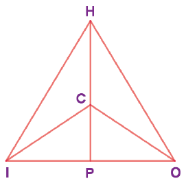
3. In the given figure, AC is congruent to AD and angle C B D is congruent to angle D E C. Prove that triangle B C F is congruent to triangle EDF.
4. In the given figure, triangle BCD is isosceles with base BD and angle BAE is congruent to angle DEA. Prove that AB is congruent to ED
5. In the given figure, D is the midpoint of OE and angle CDE is equal to 90 degree. Prove that triangle ODC is congruent triangle EDC.
Page number 165
6. Is triangle PRQ is congruent to triangle QSP question mark Why question mark
7. From the given figure, prove that triangle ABC is similar to triangle EDF
8. In the given figure YH is parallel to TE. Prove that triangle WHY is similar to triangle WET and also find HE and TE.
9. In the given figure, if triangle EAT is similar to triangle BUN, find the measure of all angles.
10. In the given figure, UB is parallel to AT and CU is congruent to CB. Prove that triangle CUB is similar to triangle CAT and hence triangle CAT is isosceles.
Objective Type Questions
11. Two similar triangles will always have DASH angles
open bracket A close bracket acute
open bracket B close bracket obtuse
open bracket C close bracket right
open bracket D close bracket matching
12. If in triangles PQR and XYZ, PQ divided by X Y is equal to QR divided by Y Z then they will be similar if
open bracket A close bracket angle Q is equal to angle Y
open bracket B close bracket angle P is equal to angle Y
open bracket C close bracket angle Q is equal to angle X
open bracket D close bracket angle P is equal to angle Z
13. A flag pole 15 meter high casts a shadow of 3 m at 10 a.m. The shadow cast by a building at the same time is 18.6 meter. The height of the building is
open bracket A close bracket 90 meter
open bracket B close bracket 91 meter
open bracket C close bracket 92 meter
open bracket D close bracket 93 meter
14. If triangle ABC is similar to triangle PQR in which angle A is equal to 53 degree angle Q is equal to 77 degree, then angle R is,
open bracket A close bracket 50 degree
open bracket B close bracket 60 degree
open bracket C close bracket 70 degree
open bracket D close bracket 80 degree
15. In the figure, which of the following statements is true question mark
open bracket A close bracket AB equal to BD
open bracket B close bracket BD less than CD
open bracket C close bracket AC equal to CD
open bracket D close bracket BC equal to CD
page number 166
The Pythagorean theorem or simply Pythagoras theorem, named after the ancient Greek Mathematician Pythagoras BC 570 to 495 open bracket BCE close bracket is one of the most famous and celebrated theorems in Mathematics. People have proved this theorem in numerous ways possibly the most for any mathematical theorem. The proofs are very diverse which include both geometric and algebraic methods dating back to thousands of years.
Statement of the theorem
In a right angled triangle, the square on the hypotenuse is equal to the sum of the squares on the other two sides.
In triangle ABC , BC square is equal to AB square plus AC square.
Visual Illustration:
The given figure contains a triangle of sides of measures 3 units, 4 units and 5 units. From this well Known 3 4 5 triangle, one can easily visualize and understand the meaning of the Pythagorean theorem.
In the figure, the sides of measure 3 units and 4 units are called the legs or sides of the right-angled triangle. The side of measure 5 units is called the hypotenuse. Recall that the hypotenuse is the greatest side in a right angled triangle.
Now, it is easily seen that a square formed with side 5 units open bracket hypotenuse close bracket has 5 multiplied by 5 equal to 25 unit squares open bracket small squares close bracket and the squares formed with side 3 units and 4 units have 3 multiplied by 3 equal to 9 unit squares and 4 multiplied by 4 equal to 16 unit squares respectively. As per the statement of the theorem, the number of unit squares on the hypotenuse is exactly the sum of the unit squares on the other two legs open bracket sides close bracket of the right angled triangle. Isn’t this amazing question mark
Yes, we find that
5 multiplied by 5 equal to 3 multiplied by 3 plus 4 multiplied by 4
That is 25 equal to 9 plus 16 open bracket True close bracket
If in a triangle, the square on the greatest side is equal to the sum of squares on the other two sides, then the triangle is right angled triangle.
Page number 167
Example:
In the right angled triangle ABC,
AB square plus AC square is equal to 11 square plus 60 square is equal to 3721 is equal to 61 square is equal to BC square. Hence traiangle ABC is a right angled triangle.
.
Open bracket small roman number one close bracket There are special sets of numbers a, b and c that makes the Pythagorean relationship true and these sets of special numbers are called Pythagorean triplets.
Example: open bracket 3, 4, 5 close bracket is a Pythagorean triplet.
open bracket ii close bracket Let k be any positive integer greater than 1 and open bracket a, b, c close bracket be a Pythagorean triplet, then open bracket ka, kb, kc close bracket is also a Pythagorean triplet
Examples:
K |
open bracket 3,4,5 close bracket |
open bracket 5,12,13 close bracket |
2k |
open bracket 6,8,10 close bracket |
open bracket 10,24,26 close bracket |
3k |
open bracket 9,12,15 close bracket |
open bracket 15,36,39 close bracket |
4k |
open bracket 12,16,20 close bracket |
open bracket 20,48,52 close bracket |
So, it is clear that we can have infinitely many Pythagorean triplets just by multiplying any Pythagorean triplet by k.
We shall now see a few examples on the use of Pythagoras theorem in problems.
Example 5.11
In the figure, AB is perpendicular to AC
a close bracket What type of triangle ABC question mark
b close bracket What are AB and AC of the triangle ABC question mark
c close bracket What is CB called as question mark
d close bracket If AC equal to AB then, what is the measure of angle B and angle C question mark
Solution:
a close bracket triangle ABC is right angled as AB perpendicular to AC at A.
b close bracket AB and AC are legs of triangle ABC.
c close bracket CB is called as the hypotenuse.
d close bracket angle B plus angle C is equal to 90 degree and equal angles are opposite to equal sides.
Hence, angle B is equal to angle C is equal to 90 degree divided by 2 is equal to 45 degree.
Example 5.12
Can a right triangle have sides that measure 5centimetre, 12 centimetre and 13 centimetre question mark
Solution:
Take a equal to 5, b equal to 12 and c equal to 13
Now, a power 2 plus b power 2 is equal to 5 power 2 plus 12 power 2 is equal to 25 + 144 is equal to 169 is equal to 13 power 2 is equal to c power 2 .
By the converse of Pythagoras theorem, the triangle with given measures is a right angled
triangle.
Example 5.13
A 20 feet ladder leans against a wall at height of 16 feet from the ground. How far is the base of the ladder from the wall question mark
Solution:
The ladder, wall and the ground form a right triangle with the ladder as the hypotenuse.
From the figure, by Pythagoras theorem,
Page number 168
20 power 2 is equal to 16 power 2 + x power 2
Which implies that 400 is equal to 256 + x power 2
Which implies that x power 2 is equal to 400 minus 256 is equal to 144 Is equal to 12 power 2
Which implies that x is equal to 12 feet
Therefore, the base open bracket foot close bracket of the ladder is 12 feet away from the wall.
Box items
Activity
1. We can construct sets of Pythagorean triplets as follows.
Let m and n be any two positive integers open bracket m greater than n close bracket :
open bracket a, b, c close bracket is a Pythagorean triplet if a equal to m power 2 minus n power 2, b is equal to 2 multiplied by m multiplied by n and c equal to m power 2 + n power 2 open bracket Think, why question mark close bracket.
Complete the table
m |
n |
a is equal to m power 2 minus n power 2 |
b is equal to 2 multiplied by 2 multiplied by m multiplied by n |
c is equal to m power 2 + n power 2 |
Pythagorean triplet |
2 |
1 |
DASH |
DASH |
DASH |
DASH |
3 |
2 |
DASH |
DASH |
DASH |
DASH |
4 |
1 |
15 |
8 |
17 |
Open bracket 15, 8,17 close bracket |
7 |
2 |
45 |
28 |
53 |
Open bracket 45, 28,53 close bracket |
2. Find all integer-sided right angled triangles with hypotenuse 85.
Example 5.14
Find LM, MN, LN and also the area of triangle L O N.
Solution:
From triangle LMO by Pythagoras theorem,
LM power 2 is equal to OL power 2 minus Om power 2
Which implies that LM power 2 is equal to 13 power 2 minus 12 power 2 is equal to 169 minus 144 is equal to 25 is equal to 5 power 2.
Therefore LM is equal to 5 units
From triangle NMO, by Pythagoras theorem,
MN power 2 is equal to ON power 2 minus OM power 2
Is equal to 15 power 2 minus 12 power 2 Is equal to 225 minus 144 Is equal to 81 Is equal to 9 power 2
Therefore MN equal to 9 units
Hence, LN Is equal to MN + MN Is equal to 5 + 9 Is equal to 14 units
Area of triangle L O N equal to 1 divided by 2 multiplied by base multiplied by height
Equal to 1 divided by 2 multiplied by LN multiplied by OM
Equal to 1 divided by 2 multiplied by 14 multiplied by 12 is equal to 84 square units.
Page number 169
Example 5.15
Triangle ABC is equilateral and CD of the right triangle BCD is 8 centimeter. Find the side of the equilateral triangle ABC and also BD.
Solution:
As triangle ABC is equilateral from the figure, AB is equal to BC is equal to AC is equal to open bracket x minus 2 close bracket centimeter.
therefore From ΔBCD, by Pythagoras theorem
BD power 2 is equal to BC power 2 + CD power 2
Which implies that Open bracket x + 2 close bracket power 2 is equal to open bracket x minus 2 close bracket power 2 + 8 power 2.
X power 2 + 4 multiplied by x + 4 is equal to x power 2 minus 4 multiplied by x plus 4 + 8 power 2.
Which implies that 8 multiplied by x is equal to 8 power 2
Which Implies that x is equal to 8 centimeter.
The side of the equilateral triangle ABC equal to 6 centimeter and BD equal to10 centimeter.
When two lines in a plane cross each other, they are called intersecting lines. Here, lines l1 and l2 intersect at point O and hence it is called the point of intersection of l1 and l2.
Three or more lines in a plane are said to be concurrent, if all of them pass through the same point.
In this figure, line AB, line CD and line PQ are concurrent lines and O is the point of concurrency.
A median of a triangle is a line segment from a vertex to the midpoint of the side opposite that vertex.
In the figure line segment is a median of triangle ABC.
Are there any more medians for triangle ABC question mark Yes, since there are three vertices in a triangle, one can identify three medians in a triangle.
Example 5.16
In the figure, ABC is a triangle and AM is one of its medians. If BM equal to 3.5 centimeter , find the length of the side BC.
Solution:
AM is median which implies that M is the midpoint of BC.
Given that, BM equal to 3.5 centimeter, hence BC equal to twice the length BM is equal to 2 multiplied by 3.5 centimeter is equal to 7 centimeter.
Page number 170
Box item
Activity
1. Consider a paper cut out of a triangle. open bracket Let us have an acute angled triangle, to start with close bracket . Name it, say ABC.
2. Fold the paper along the line that passes through the point A and meets the line BC such that point B falls on C. Make a crease and unfold the sheet.
3. Mark the mid point M of BC.
4 You can now draw the median AM, if
you want to see it clearly. Open bracket Or you can
leave it as a fold close bracket.
5. In the same way, fold and draw the
other two medians.
6. Do the medians pass through the same
point?
Now you can repeat this activity for an obtuse angled triangle and a right triangle.
What is the conclusion question mark We see that,
The three medians of any triangle are concurrent.
The point of concurrence of the three medians in a triangle is called its Centroid, denoted by the letter G. Interestingly, it happens to be the center of mass of the triangle. One can easily verify this fact. Take a stiff cut out of triangle of paper. It can be balanced horizontally at this point on a fingertip or a pencil tip.
Page number 171
Should you fold all the three medians to find the centroid question mark Now you can explore among yourself the following questions:
open bracket small roman 1 close bracket How can you find the centroid of a triangle question mark
open bracket small roman 2 close bracket Is the centroid equidistant from the vertices question mark
open bracket small roman 3 close bracket Is the centroid of a triangle always in its interior question mark
open bracket small roman 4 close bracket Is there anything special about the medians of an
open bracket a close bracket Isosceles triangle question mark open bracket b close bracket Equilateral triangle question mark
Properties of the centroid of a triangle
The location of the centroid of a triangle exhibits some nice properties.
Surprisingly, the areas of these triangles are equal.
That is, the medians of a triangle divide it into three smaller triangles of equal area!
Box item
Do you know question mark
The centroid of a triangle splits each of the medians in two segments, the one closer to the vertex being twice as long as the other one.
This means the centroid divides each median in a ratio of 2is to1.
open bracket For example, GD is 1 divided by 3 of PD close bracket. open bracket Try to verify this by paper folding close bracket.
Example 5.17
In the figure G is the centroid of the triangle XYZ.
open bracket small roman 1 close bracket If GL equal to 2.5 centimeter, find the length XL.
open bracket small roman 2 close bracket If YM equal to 9.3 centimeter, find the length GM.
Solution:
open bracket small roman 1 close bracket Since G is the centroid, XG is to GL is equal to 2 is to 1 which gives XG is to 2.5 is equal to 2 is to 1.
Therefore, we get 1 multiplied by open bracket XG close bracket is equal to 2 multiplied by open bracket 2.5 close bracket which implies that XG is equal to 5 centimeter.
Hence, length XL equal to XG + GL is equal to 5 + 2.5 is equal to 7.5 centimeter.
open bracket small roman 2 close bracket If YG is of 2 parts then GM will be 1 part. Open bracket Why question mark close bracket
This means Y M has 3 parts.
3 parts is 9.3 centimeter long. So GM open bracket made of 1 part close bracket must be 9.3 divided by 3 is equal to 3.1 centimeter.
Example 5.18
ABC is a triangle and G is its centroid. If AD is equal to 12 centimeter, BC is equal to 8 centimeter
and BE is equal to 9 centimeter, find the perimeter of triangle BDG.
Page number 172
Solution:
ABC is a triangle and G is its centroid. If,
AD equal to 12centimeter which implies that GD equal to 1 divided by 3 of AD equal to 1 divided by 3 open bracket 12 close bracket equal to 4centimeter and BE equal to9 centimeter which implies that BG equal to 2 divided by 3 of BE equal to 2 divided by 3 open bracket 9 close bracket equal to 6 centimeter.
Also D is a midpoint of BC which implies that BD is equal to 1 divided by 2 of BC is equal to 1 divided by 2 open bracket 8 close bracket equal to 4 centimeter.
Therefore The perimeter of triangle BDG is equal to BD + GD+BG equals to 4+4+6 equal to 14 centimter.
Altitude of a triangle also known as the height of the triangle, is the perpendicular drawn from the vertex of the triangle to the opposite side. The altitude makes a right angle with the base of a triangle. Here, in triangle ABC, AD is one of the altitudes as AD perpendicular to BC.
In the same way, you find altitudes of other two sides. Also, with the help of your teacher, you find altitudes of right angled triangle and obtuse angled triangle. Do the altitudes of triangle pass through the same point question mark What is your conclusion question mark We see that,
The three altitudes of any triangle are concurrent.
The point of concurrence is known as its Ortho centre, denoted by the letter H.
1. In any acute angled triangle, all three altitudes are inside the triangle. Where will be the ortho center question mark In the interior of the triangle or in its exterior question mark
2. In any rightangled triangle, the altitude perpendicular to the hypotenuse is inside the triangle; the other two altitudes are the legs of the triangle. Can you identify the ortho centre in this case question mark
3. In any obtuse angled triangle, the altitude connected to the obtuse vertex is inside the triangle, and the two altitudes connected to the acute vertices are outside the triangle. Can you identify the ortho centre in this case question mark
Page number 173
Let us first recall the following ideas.
Perpendicular
AB is a line segment.
l is perpendicular to AB line segment .
P is the foot of the perpendicular.
Note that line segment AP ↑ PB here.
Bisector
line segment PQ is a line segment.
l1 is a bisector to line segment PQ.
M is the midpoint of line segment PQ.
l1 need not be perpenticular to line segment PQ.
Perpendicular bisector
line segment X Y is a line segment.
l2 is a bisector to line segment X Y.
l2 is also perpenticular to line segment X Y .
M is the midpoint of line segment X Y.
Consider a triangle ABC. It has three sides. For each side you can have a perpendicular bisector as follows:
Box item
Perpendicular bisector of side BC
M is the midpoint of line segment BC
We have a perpendicular at M
Perpendicular bisector of side AC
N is the midpoint of line segment AC.
We have a perpendicular at N.
Perpendicular bisector of side AB
P is the midpoint of line segment AB.
We have a perpendicular at P.
Surprisingly, all the three perpendicular bisectors of the sides of a triangle are concurrent at a point.
One can visualize the point of concurrence of the perpendicular bisectors, through simple paper folding. Try and see that,
The perpendicular bisectors of the sides of any triangle are concurrent.
As done in the earlier activity on Centroid, you can repeat the experiment
for various types of triangle, acute, obtuse, right, isosceles and equilateral.
Do you find anything special with the equilateral triangle in this case question mark
The point of concurrence of the three perpendicular bisectors of a triangle is called as its Circumcenter, denoted by the letter S.
Page number 174
Why should it be called so question mark Because one can draw a circle exactly passing through the three vertices of the triangle, with centre at the point of concurrence of the perpendicular bisectors of sides. Thus, the circumcentre is equidistant from the vertices of the triangle.